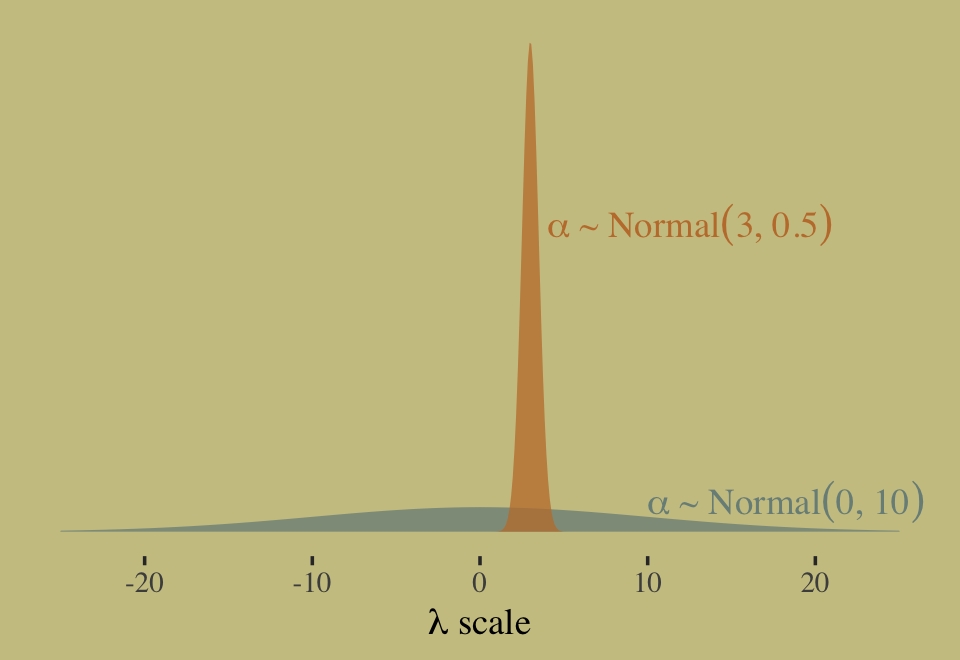
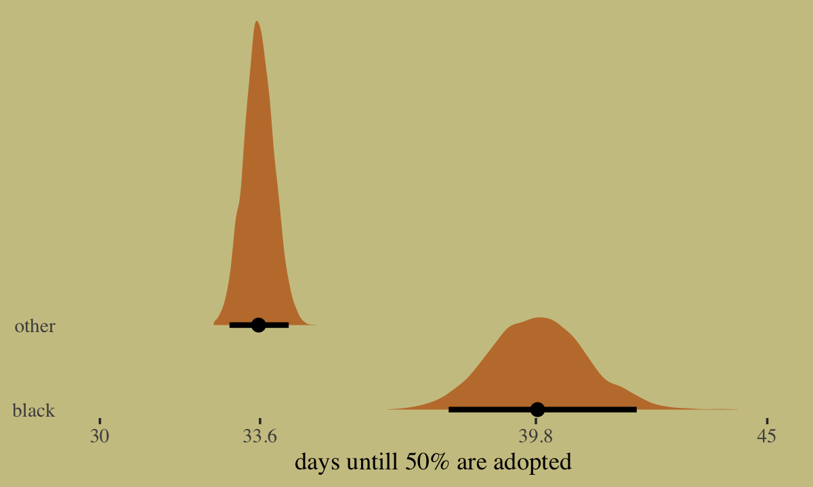

11 God Spiked the Integers
The most common and useful generalized linear models are models for counts. Counts are non-negative integers–0, 1, 2, and so on. They are the basis of all mathematics, the first bits that children learn. But they are also intoxicatingly complicated to model–hence the apocryphal slogan that titles this chapter. The essential problem is this: When what we wish to predict is a count, the scale of the parameters is never the same as the scale of the outcome. A count golem, like a tide prediction engine, has a whirring machinery underneath that doesn’t resemble the output. Keeping the tide engine in mind, you can master these models and use them responsibly.
We will engineer complete examples of the two most common types of count model. Binomial regression is the name we’ll use for a family of related procedures that all model a binary classification–alive/dead, accept/reject, left/right–for which the total of both categories is known. This is like the marble and globe tossing examples from Chapter 2. But now you get to incorporate predictor variables. Poisson regression is a GLM that models a count with an unknown maximum—number of elephants in Kenya, number of applications to a PhD program, number of significance tests in an issue of Psychological Science. As described in Chapter 10, the Poisson model is a special case of binomial. At the end, the chapter describes some other count regressions. (McElreath, 2020, p. 323, emphasis in the original)
In this chapter, we focus on the two most common types of count models: the binomial and the Poisson.
11.1 Binomial regression
The basic binomial model follows the form
\[y \sim \operatorname{Binomial}(n, p),\]
where \(y\) is some count variable, \(n\) is the number of trials, and \(p\) it the probability a given trial was a 1, which is sometimes termed a success. When \(n = 1\), then \(y\) is a vector of 0’s and 1’s. Presuming the logit link4, which we just covered in Chapter 10, models of this type are commonly termed logistic regression. When \(n > 1\), and still presuming the logit link, we might call our model an aggregated logistic regression model, or more generally an aggregated binomial regression model.
11.1.1 Logistic regression: Prosocial chimpanzees.
Load the Silk et al. (2005) chimpanzees data.
data(chimpanzees, package = "rethinking")
d <- chimpanzees
rm(chimpanzees)The data include two experimental conditions, prosoc_left and condition, each of which has two levels. This results in four combinations.
library(tidyverse)
library(flextable)
d %>%
distinct(prosoc_left, condition) %>%
mutate(description = str_c("Two food items on ", c("right and no partner",
"left and no partner",
"right and partner present",
"left and partner present"))) %>%
flextable() %>%
width(width = c(1, 1, 4))condition | prosoc_left | description |
0 | 0 | Two food items on right and no partner |
0 | 1 | Two food items on left and no partner |
1 | 0 | Two food items on right and partner present |
1 | 1 | Two food items on left and partner present |
It would be conventional to include these two variables and their interaction using dummy variables. We’re going to follow McElreath and use an index variable approach, instead. If you’d like to see what this would look like using the dummy variable approach, check out my (2020) translation of the corresponding section from McElreath’s first (2015) edition. For now, make the index, which we’ll be saving as a factor.
d <-
d %>%
mutate(treatment = factor(1 + prosoc_left + 2 * condition)) %>%
# this will come in handy, later
mutate(labels = factor(treatment,
levels = 1:4,
labels = c("r/n", "l/n", "r/p", "l/p")))We can use the dplyr::count() function to get a sense of the distribution of the conditions in the data.
d %>%
count(condition, treatment, prosoc_left)## condition treatment prosoc_left n
## 1 0 1 0 126
## 2 0 2 1 126
## 3 1 3 0 126
## 4 1 4 1 126Fire up brms.
library(brms)We start with the simple intercept-only logistic regression model, which follows the statistical formula
\[\begin{align*} \text{pulled_left}_i & \sim \operatorname{Binomial}(1, p_i) \\ \operatorname{logit}(p_i) & = \alpha \\ \alpha & \sim \operatorname{Normal}(0, w), \end{align*}\]
where \(w\) is the hyperparameter for \(\sigma\) the value for which we have yet to choose. To start things off, we’ll set \(w = 10\), fit a model with where we set sample_prior = TRUE, and get a sense of the prior on a plot.
In the brm() formula syntax, including a | bar on the left side of a formula indicates we have extra supplementary information about our criterion. In this case, that information is that each pulled_left value corresponds to a single trial (i.e., trials(1)), which itself corresponds to the \(n = 1\) portion of the statistical formula, above.
b11.1 <-
brm(data = d,
family = binomial,
pulled_left | trials(1) ~ 1,
prior(normal(0, 10), class = Intercept),
seed = 11,
sample_prior = T,
file = "fits/b11.01")Before we go any further, let’s discuss the plot theme. For this chapter, we’ll take our color scheme from the "Moonrise2" palette from the wesanderson package (Ram & Wickham, 2018).
library(wesanderson)
wes_palette("Moonrise2")
wes_palette("Moonrise2")[1:4]## [1] "#798E87" "#C27D38" "#CCC591" "#29211F"We’ll also take a few formatting cues from Edward Tufte (2001), courtesy of the ggthemes package. The theme_tufte() function will change the default font and remove some chart junk. The theme_set() function, below, will make these adjustments the default for all subsequent ggplot2 plots. To undo this, just execute theme_set(theme_default()).
library(ggthemes)
theme_set(
theme_default() +
theme_tufte() +
theme(plot.background = element_rect(fill = wes_palette("Moonrise2")[3],
color = wes_palette("Moonrise2")[3]))
)Now we’re ready to plot. We’ll extract the prior draws with prior_draws(), convert them from the log-odds metric to the probability metric with the brms::inv_logit_scaled() function, and adjust the bandwidth of the density plot with the adjust argument within geom_density().
prior_draws(b11.1) %>%
mutate(p = inv_logit_scaled(Intercept)) %>%
ggplot(aes(x = p)) +
geom_density(fill = wes_palette("Moonrise2")[4],
size = 0, adjust = 0.1) +
scale_y_continuous(NULL, breaks = NULL) +
xlab("prior prob pull left")
At this point in the analysis, we were only able to make part of the left panel of McElreath’s Figure 11.3. We’ll add to it in a bit. Now update the model so that \(w = 1.5\).
b11.1b <-
brm(data = d,
family = binomial,
pulled_left | trials(1) ~ 1,
prior(normal(0, 1.5), class = Intercept),
seed = 11,
sample_prior = T,
file = "fits/b11.01b")Now we can make the full version of the left panel of Figure 11.3.
# wrangle
bind_rows(prior_draws(b11.1),
prior_draws(b11.1b)) %>%
mutate(p = inv_logit_scaled(Intercept),
w = factor(rep(c(10, 1.5), each = n() / 2),
levels = c(10, 1.5))) %>%
# plot
ggplot(aes(x = p, fill = w)) +
geom_density(size = 0, alpha = 3/4, adjust = 0.1) +
scale_fill_manual(expression(italic(w)), values = wes_palette("Moonrise2")[c(4, 1)]) +
scale_y_continuous(NULL, breaks = NULL) +
labs(title = expression(alpha%~%Normal(0*", "*italic(w))),
x = "prior prob pull left")
If we’d like to fit a model that includes an overall intercept and uses McElreath’d index variable approach for the predictor variable treatment, we’ll have to switch to the brms non-linear syntax. Here it is for the models using \(w = 10\) and then \(w = 0.5\).
# w = 10
b11.2 <-
brm(data = d,
family = binomial,
bf(pulled_left | trials(1) ~ a + b,
a ~ 1,
b ~ 0 + treatment,
nl = TRUE),
prior = c(prior(normal(0, 1.5), nlpar = a),
prior(normal(0, 10), nlpar = b, coef = treatment1),
prior(normal(0, 10), nlpar = b, coef = treatment2),
prior(normal(0, 10), nlpar = b, coef = treatment3),
prior(normal(0, 10), nlpar = b, coef = treatment4)),
iter = 2000, warmup = 1000, chains = 4, cores = 4,
seed = 11,
sample_prior = T,
file = "fits/b11.02")
# w = 0.5
b11.3 <-
brm(data = d,
family = binomial,
bf(pulled_left | trials(1) ~ a + b,
a ~ 1,
b ~ 0 + treatment,
nl = TRUE),
prior = c(prior(normal(0, 1.5), nlpar = a),
prior(normal(0, 0.5), nlpar = b, coef = treatment1),
prior(normal(0, 0.5), nlpar = b, coef = treatment2),
prior(normal(0, 0.5), nlpar = b, coef = treatment3),
prior(normal(0, 0.5), nlpar = b, coef = treatment4)),
iter = 2000, warmup = 1000, chains = 4, cores = 4,
seed = 11,
sample_prior = T,
file = "fits/b11.03")If all you want to do is fit the models, you wouldn’t have to add a separate prior() statement for each level of treatment. You could have just included a single line, prior(normal(0, 0.5), nlpar = b), that did not include a coef argument. The problem with this approach is we’d only get one column for treatment when using the prior_draws() function to retrieve the prior samples. To get separate columns for the prior samples of each of the levels of treatment, you need to take the verbose approach, above.
Anyway, here’s how to make a version of the right panel of Figure 11.3.
# wrangle
prior <-
bind_rows(prior_draws(b11.2),
prior_draws(b11.3)) %>%
mutate(w = factor(rep(c(10, 0.5), each = n() / 2),
levels = c(10, 0.5)),
p1 = inv_logit_scaled(b_a + b_b_treatment1),
p2 = inv_logit_scaled(b_a + b_b_treatment2)) %>%
mutate(diff = abs(p1 - p2))
# plot
prior %>%
ggplot(aes(x = diff, fill = w)) +
geom_density(size = 0, alpha = 3/4, adjust = 0.1) +
scale_fill_manual(expression(italic(w)), values = wes_palette("Moonrise2")[c(4, 2)]) +
scale_y_continuous(NULL, breaks = NULL) +
labs(title = expression(alpha%~%Normal(0*", "*italic(w))),
x = "prior diff between treatments")Here are the averages of the two prior-predictive difference distributions.
prior %>%
group_by(w) %>%
summarise(mean = mean(diff))## # A tibble: 2 × 2
## w mean
## <fct> <dbl>
## 1 10 0.483
## 2 0.5 0.0973Before we move on to fit the full model, it might be useful to linger here and examine the nature of the model we just fit. Here’s the parameter summary for b11.3.
print(b11.3)## Family: binomial
## Links: mu = logit
## Formula: pulled_left | trials(1) ~ a + b
## a ~ 1
## b ~ 0 + treatment
## Data: d (Number of observations: 504)
## Draws: 4 chains, each with iter = 2000; warmup = 1000; thin = 1;
## total post-warmup draws = 4000
##
## Population-Level Effects:
## Estimate Est.Error l-95% CI u-95% CI Rhat Bulk_ESS Tail_ESS
## a_Intercept 0.33 0.26 -0.18 0.83 1.01 995 1113
## b_treatment1 -0.12 0.29 -0.68 0.44 1.01 1212 1755
## b_treatment2 0.29 0.29 -0.27 0.87 1.00 1266 1398
## b_treatment3 -0.37 0.29 -0.94 0.18 1.00 1152 1682
## b_treatment4 0.21 0.29 -0.35 0.77 1.01 1192 1450
##
## Draws were sampled using sampling(NUTS). For each parameter, Bulk_ESS
## and Tail_ESS are effective sample size measures, and Rhat is the potential
## scale reduction factor on split chains (at convergence, Rhat = 1).Now focus on the likelihood portion of the model formula,
\[\begin{align*} \text{pulled_left}_i & \sim \operatorname{Binomial}(1, p_i) \\ \operatorname{logit}(p_i) & = \alpha + \beta_\text{treatment} . \end{align*}\]
When you have one overall intercept \(\alpha\) and then use the non-linear approach for the treatment index, you end up with as many \(\beta\) parameters as there levels for treatment. This means the formula for treatment == 1 is \(\alpha + \beta_{\text{treatment}[1]}\), the formula for treatment == 2 is \(\alpha + \beta_{\text{treatment}[2]}\), and so on. This also effectively makes \(\alpha\) the grand mean. Here’s the empirical grand mean.
d %>%
summarise(grand_mean = mean(pulled_left))## grand_mean
## 1 0.5793651Now here’s the summary of \(\alpha\) after transforming it back into the probability metric with the inv_logit_scaled() function.
library(tidybayes)
as_draws_df(b11.3) %>%
transmute(alpha = inv_logit_scaled(b_a_Intercept)) %>%
mean_qi()## # A tibble: 1 × 6
## alpha .lower .upper .width .point .interval
## <dbl> <dbl> <dbl> <dbl> <chr> <chr>
## 1 0.579 0.456 0.697 0.95 mean qiHere are the empirical probabilities for each of the four levels of treatment.
d %>%
group_by(treatment) %>%
summarise(mean = mean(pulled_left))## # A tibble: 4 × 2
## treatment mean
## <fct> <dbl>
## 1 1 0.548
## 2 2 0.659
## 3 3 0.476
## 4 4 0.635Here are the corresponding posteriors.
as_draws_df(b11.3) %>%
pivot_longer(b_b_treatment1:b_b_treatment4) %>%
mutate(treatment = str_remove(name, "b_b_treatment"),
mean = inv_logit_scaled(b_a_Intercept + value)) %>%
group_by(treatment) %>%
mean_qi(mean)## # A tibble: 4 × 7
## treatment mean .lower .upper .width .point .interval
## <chr> <dbl> <dbl> <dbl> <dbl> <chr> <chr>
## 1 1 0.551 0.467 0.628 0.95 mean qi
## 2 2 0.649 0.566 0.726 0.95 mean qi
## 3 3 0.489 0.409 0.571 0.95 mean qi
## 4 4 0.629 0.546 0.704 0.95 mean qiOkay, let’s get back on track with the text. Now we’re ready to fit the full model, which follows the form
\[\begin{align*} \text{pulled_left}_i & \sim \operatorname{Binomial}(1, p_i) \\ \operatorname{logit}(p_i) & = \alpha_{\color{#54635e}{\text{actor}}[i]} + \beta_{\color{#a4692f}{\text{treatment}}[i]} \\ \alpha_{\color{#54635e}j} & \sim \operatorname{Normal}(0, 1.5) \\ \beta_{\color{#a4692f}k} & \sim \operatorname{Normal}(0, 0.5). \end{align*}\]
Before fitting the model, we should save actor as a factor.
d <-
d %>%
mutate(actor = factor(actor))Now fit the model.
b11.4 <-
brm(data = d,
family = binomial,
bf(pulled_left | trials(1) ~ a + b,
a ~ 0 + actor,
b ~ 0 + treatment,
nl = TRUE),
prior = c(prior(normal(0, 1.5), nlpar = a),
prior(normal(0, 0.5), nlpar = b)),
iter = 2000, warmup = 1000, chains = 4, cores = 4,
seed = 11,
file = "fits/b11.04")Inspect the parameter summary.
print(b11.4)## Family: binomial
## Links: mu = logit
## Formula: pulled_left | trials(1) ~ a + b
## a ~ 0 + actor
## b ~ 0 + treatment
## Data: d (Number of observations: 504)
## Draws: 4 chains, each with iter = 2000; warmup = 1000; thin = 1;
## total post-warmup draws = 4000
##
## Population-Level Effects:
## Estimate Est.Error l-95% CI u-95% CI Rhat Bulk_ESS Tail_ESS
## a_actor1 -0.45 0.33 -1.08 0.20 1.00 1403 2472
## a_actor2 3.90 0.75 2.56 5.48 1.00 3863 2528
## a_actor3 -0.75 0.33 -1.42 -0.10 1.00 1334 2318
## a_actor4 -0.74 0.33 -1.40 -0.11 1.00 1309 2457
## a_actor5 -0.45 0.33 -1.09 0.19 1.01 1330 2290
## a_actor6 0.48 0.34 -0.17 1.15 1.00 1441 2622
## a_actor7 1.96 0.42 1.17 2.81 1.00 2001 2700
## b_treatment1 -0.04 0.28 -0.60 0.52 1.00 1239 2256
## b_treatment2 0.48 0.29 -0.07 1.05 1.00 1191 1943
## b_treatment3 -0.39 0.28 -0.96 0.17 1.00 1154 2195
## b_treatment4 0.37 0.28 -0.19 0.91 1.00 1195 2217
##
## Draws were sampled using sampling(NUTS). For each parameter, Bulk_ESS
## and Tail_ESS are effective sample size measures, and Rhat is the potential
## scale reduction factor on split chains (at convergence, Rhat = 1).Here’s how we might make our version of McElreath’s coefficient plot of the \(\alpha\) parameters.
library(tidybayes)
post <- as_draws_df(b11.4)
post %>%
pivot_longer(contains("actor")) %>%
mutate(probability = inv_logit_scaled(value),
actor = factor(str_remove(name, "b_a_actor"),
levels = 7:1)) %>%
ggplot(aes(x = probability, y = actor)) +
geom_vline(xintercept = .5, color = wes_palette("Moonrise2")[1], linetype = 3) +
stat_pointinterval(.width = .95, size = 1/2,
color = wes_palette("Moonrise2")[4]) +
scale_x_continuous(expression(alpha[actor]), limits = 0:1) +
ylab(NULL) +
theme(axis.ticks.y = element_blank())
Here’s the corresponding coefficient plot of the \(\beta\) parameters.
tx <- c("R/N", "L/N", "R/P", "L/P")
post %>%
select(contains("treatment")) %>%
set_names("R/N","L/N","R/P","L/P") %>%
pivot_longer(everything()) %>%
mutate(probability = inv_logit_scaled(value),
treatment = factor(name, levels = tx)) %>%
mutate(treatment = fct_rev(treatment)) %>%
ggplot(aes(x = value, y = treatment)) +
geom_vline(xintercept = 0, color = wes_palette("Moonrise2")[2], linetype = 3) +
stat_pointinterval(.width = .95, size = 1/2,
color = wes_palette("Moonrise2")[4]) +
labs(x = expression(beta[treatment]),
y = NULL) +
theme(axis.ticks.y = element_blank())
Now make the coefficient plot for the primary contrasts of interest.
post %>%
mutate(db13 = b_b_treatment1 - b_b_treatment3,
db24 = b_b_treatment2 - b_b_treatment4) %>%
pivot_longer(db13:db24) %>%
mutate(diffs = factor(name, levels = c("db24", "db13"))) %>%
ggplot(aes(x = value, y = diffs)) +
geom_vline(xintercept = 0, color = wes_palette("Moonrise2")[2], linetype = 3) +
stat_pointinterval(.width = .95, size = 1/2,
color = wes_palette("Moonrise2")[4]) +
labs(x = "difference",
y = NULL) +
theme(axis.ticks.y = element_blank())
“These are the contrasts between the no-partner/partner treatments” (p. 331). Next, we prepare for the posterior predictive check. McElreath showed how to compute empirical proportions by the levels of actor and treatment with the by() function. Our approach will be with a combination of group_by() and summarise(). Here’s what that looks like for actor == 1.
d %>%
group_by(actor, treatment) %>%
summarise(proportion = mean(pulled_left)) %>%
filter(actor == 1)## # A tibble: 4 × 3
## # Groups: actor [1]
## actor treatment proportion
## <fct> <fct> <dbl>
## 1 1 1 0.333
## 2 1 2 0.5
## 3 1 3 0.278
## 4 1 4 0.556Now we’ll follow that through to make the top panel of Figure 11.4. Instead of showing the plot, we’ll save it for the next code block.
p1 <-
d %>%
group_by(actor, treatment) %>%
summarise(proportion = mean(pulled_left)) %>%
left_join(d %>% distinct(actor, treatment, labels, condition, prosoc_left),
by = c("actor", "treatment")) %>%
mutate(condition = factor(condition)) %>%
ggplot(aes(x = labels, y = proportion)) +
geom_hline(yintercept = .5, color = wes_palette("Moonrise2")[3]) +
geom_line(aes(group = prosoc_left),
size = 1/4, color = wes_palette("Moonrise2")[4]) +
geom_point(aes(color = condition),
size = 2.5, show.legend = F) +
labs(subtitle = "observed proportions")Next we use brms() fitted to get the posterior predictive distributions for each unique combination of actor and treatment, wrangle, and plot. First, we save the plot as p2 and then we use patchwork syntax to combine the two subplots.
nd <-
d %>%
distinct(actor, treatment, labels, condition, prosoc_left)
p2 <-
fitted(b11.4,
newdata = nd) %>%
data.frame() %>%
bind_cols(nd) %>%
mutate(condition = factor(condition)) %>%
ggplot(aes(x = labels, y = Estimate, ymin = Q2.5, ymax = Q97.5)) +
geom_hline(yintercept = .5, color = wes_palette("Moonrise2")[3]) +
geom_line(aes(group = prosoc_left),
size = 1/4, color = wes_palette("Moonrise2")[4]) +
geom_pointrange(aes(color = condition),
fatten = 2.5, show.legend = F) +
labs(subtitle = "posterior predictions")
# combine the two ggplots
library(patchwork)
(p1 / p2) &
scale_color_manual(values = wes_palette("Moonrise2")[c(2:1)]) &
scale_y_continuous("proportion left lever",
breaks = c(0, .5, 1), limits = c(0, 1)) &
xlab(NULL) &
theme(axis.ticks.x = element_blank(),
panel.background = element_rect(fill = alpha("white", 1/10), size = 0)) &
facet_wrap(~ actor, nrow = 1, labeller = label_both)
Let’s make two more index variables.
d <-
d %>%
mutate(side = factor(prosoc_left + 1), # right 1, left 2
cond = factor(condition + 1)) # no partner 1, partner 2Now fit the model without the interaction between prosoc_left and condition.
b11.5 <-
brm(data = d,
family = binomial,
bf(pulled_left | trials(1) ~ a + bs + bc,
a ~ 0 + actor,
bs ~ 0 + side,
bc ~ 0 + cond,
nl = TRUE),
prior = c(prior(normal(0, 1.5), nlpar = a),
prior(normal(0, 0.5), nlpar = bs),
prior(normal(0, 0.5), nlpar = bc)),
iter = 2000, warmup = 1000, chains = 4, cores = 4,
seed = 11,
file = "fits/b11.05")Compare b11.4 and b11.5 by the PSIS-LOO and the WAIC.
b11.4 <- add_criterion(b11.4, c("loo", "waic"))
b11.5 <- add_criterion(b11.5, c("loo", "waic"))
loo_compare(b11.4, b11.5, criterion = "loo") %>% print(simplify = F)## elpd_diff se_diff elpd_loo se_elpd_loo p_loo se_p_loo looic se_looic
## b11.5 0.0 0.0 -265.4 9.6 7.8 0.4 530.8 19.1
## b11.4 -0.6 0.6 -266.0 9.5 8.4 0.4 532.0 19.0loo_compare(b11.4, b11.5, criterion = "waic") %>% print(simplify = F)## elpd_diff se_diff elpd_waic se_elpd_waic p_waic se_p_waic waic se_waic
## b11.5 0.0 0.0 -265.4 9.6 7.7 0.4 530.8 19.1
## b11.4 -0.6 0.6 -266.0 9.5 8.4 0.4 531.9 19.0Here are the weights.
model_weights(b11.4, b11.5, weights = "loo") %>% round(digits = 2)## b11.4 b11.5
## 0.36 0.64model_weights(b11.4, b11.5, weights = "waic") %>% round(digits = 2)## b11.4 b11.5
## 0.36 0.64Here’s a quick check of the parameter summary for the non-interaction model, b11.5.
print(b11.5)## Family: binomial
## Links: mu = logit
## Formula: pulled_left | trials(1) ~ a + bs + bc
## a ~ 0 + actor
## bs ~ 0 + side
## bc ~ 0 + cond
## Data: d (Number of observations: 504)
## Draws: 4 chains, each with iter = 2000; warmup = 1000; thin = 1;
## total post-warmup draws = 4000
##
## Population-Level Effects:
## Estimate Est.Error l-95% CI u-95% CI Rhat Bulk_ESS Tail_ESS
## a_actor1 -0.64 0.44 -1.50 0.23 1.00 962 1563
## a_actor2 3.76 0.81 2.29 5.52 1.00 1941 2090
## a_actor3 -0.95 0.44 -1.80 -0.08 1.00 899 1693
## a_actor4 -0.94 0.44 -1.79 -0.08 1.00 923 1348
## a_actor5 -0.65 0.44 -1.53 0.22 1.00 1059 1638
## a_actor6 0.28 0.44 -0.59 1.18 1.00 1026 1401
## a_actor7 1.77 0.51 0.82 2.78 1.00 1124 1969
## bs_side1 -0.19 0.33 -0.83 0.42 1.00 1572 2369
## bs_side2 0.50 0.33 -0.16 1.14 1.00 1581 2053
## bc_cond1 0.28 0.34 -0.40 0.92 1.00 1340 1885
## bc_cond2 0.03 0.34 -0.66 0.66 1.00 1331 2136
##
## Draws were sampled using sampling(NUTS). For each parameter, Bulk_ESS
## and Tail_ESS are effective sample size measures, and Rhat is the potential
## scale reduction factor on split chains (at convergence, Rhat = 1).Because it’s good practice, here’s the b11.5 version of the bottom panel of Figure 11.4.
nd <-
d %>%
distinct(actor, treatment, labels, cond, side)
fitted(b11.5,
newdata = nd) %>%
data.frame() %>%
bind_cols(nd) %>%
ggplot(aes(x = labels, y = Estimate, ymin = Q2.5, ymax = Q97.5)) +
geom_hline(yintercept = .5, color = wes_palette("Moonrise2")[3]) +
geom_line(aes(group = side),
size = 1/4, color = wes_palette("Moonrise2")[4]) +
geom_pointrange(aes(color = cond),
fatten = 2.5, show.legend = F) +
scale_color_manual(values = wes_palette("Moonrise2")[c(2:1)]) +
scale_y_continuous("proportion left lever",
breaks = c(0, .5, 1), limits = c(0, 1)) +
labs(subtitle = "posterior predictions for b11.5",
x = NULL) +
theme(axis.ticks.x = element_blank(),
panel.background = element_rect(fill = alpha("white", 1/10), size = 0)) +
facet_wrap(~ actor, nrow = 1, labeller = label_both)
11.1.1.1 Overthinking: Adding log-probability calculations to a Stan model.
For retrieving log-probability summaries, our approach with brms is a little different than the one you might take with McElreath’s rethinking. Rather than adding a log_lik=TRUE argument within rethinking::ulam(), we just use the log_lik() function after fitting a brms model. You may recall we already practiced this way back in Section 7.2.4.1. Here’s a quick example of what that looks like for b11.5.
log_lik(b11.5) %>% str()## num [1:4000, 1:504] -0.418 -0.419 -0.453 -0.366 -0.324 ...
## - attr(*, "dimnames")=List of 2
## ..$ : NULL
## ..$ : NULL11.1.2 Relative shark and absolute deer.
Based on the full model, b11.4, here’s how you might compute the posterior mean and 95% intervals for the proportional odds of switching from treatment == 2 to treatment == 4.
as_draws_df(b11.4) %>%
mutate(proportional_odds = exp(b_b_treatment4 - b_b_treatment2)) %>%
mean_qi(proportional_odds)## # A tibble: 1 × 6
## proportional_odds .lower .upper .width .point .interval
## <dbl> <dbl> <dbl> <dbl> <chr> <chr>
## 1 0.927 0.524 1.51 0.95 mean qiOn average, the switch multiplies the odds of pulling the left lever by 0.92, an 8% reduction in odds. This is what is meant by proportional odds. The new odds are calculated by taking the old odds and multiplying them by the proportional odds, which is 0.92 in this example. (p. 336)
A limitation of relative measures measures like proportional odds is they ignore what you might think of as the reference or the baseline.
Consider for example a rare disease which occurs in 1 per 10-million people. Suppose also that reading this textbook increased the odds of the disease 5-fold. That would mean approximately 4 more cases of the disease per 10-million people. So only 5-in-10-million chance now. The book is safe. (p. 336)
Here that is in code.
tibble(disease_rate = 1/1e7,
fold_increase = 5) %>%
mutate(new_disease_rate = disease_rate * fold_increase)## # A tibble: 1 × 3
## disease_rate fold_increase new_disease_rate
## <dbl> <dbl> <dbl>
## 1 0.0000001 5 0.0000005The hard part, though, is that “neither absolute nor relative risk is sufficient for all purposes” (p. 337). Each provides its own unique perspective on the data. Again, welcome to applied statistics. 🤷♂
11.1.3 Aggregated binomial: Chimpanzees again, condensed.
With the tidyverse, we can use group_by() and summarise() to achieve what McElreath did with aggregate().
d_aggregated <-
d %>%
group_by(treatment, actor, side, cond) %>%
summarise(left_pulls = sum(pulled_left)) %>%
ungroup()
d_aggregated %>%
head(n = 8)## # A tibble: 8 × 5
## treatment actor side cond left_pulls
## <fct> <fct> <fct> <fct> <int>
## 1 1 1 1 1 6
## 2 1 2 1 1 18
## 3 1 3 1 1 5
## 4 1 4 1 1 6
## 5 1 5 1 1 6
## 6 1 6 1 1 14
## 7 1 7 1 1 14
## 8 2 1 2 1 9To fit an aggregated binomial model with brms, we augment the <criterion> | trials() syntax where the value that goes in trials() is either a fixed number, as in this case, or variable in the data indexing \(n\). Either way, at least some of those trials will have an \(n > 1\). Here we’ll use the hard-code method, just like McElreath did in the text.
b11.6 <-
brm(data = d_aggregated,
family = binomial,
bf(left_pulls | trials(18) ~ a + b,
a ~ 0 + actor,
b ~ 0 + treatment,
nl = TRUE),
prior = c(prior(normal(0, 1.5), nlpar = a),
prior(normal(0, 0.5), nlpar = b)),
iter = 2000, warmup = 1000, chains = 4, cores = 4,
seed = 11,
file = "fits/b11.06")Check the posterior summary.
print(b11.6)## Family: binomial
## Links: mu = logit
## Formula: left_pulls | trials(18) ~ a + b
## a ~ 0 + actor
## b ~ 0 + treatment
## Data: d_aggregated (Number of observations: 28)
## Draws: 4 chains, each with iter = 2000; warmup = 1000; thin = 1;
## total post-warmup draws = 4000
##
## Population-Level Effects:
## Estimate Est.Error l-95% CI u-95% CI Rhat Bulk_ESS Tail_ESS
## a_actor1 -0.45 0.33 -1.10 0.17 1.00 1079 1806
## a_actor2 3.88 0.74 2.54 5.49 1.00 3629 2936
## a_actor3 -0.76 0.35 -1.45 -0.09 1.00 1195 1904
## a_actor4 -0.75 0.34 -1.43 -0.08 1.00 1332 2150
## a_actor5 -0.45 0.34 -1.11 0.21 1.00 1167 1924
## a_actor6 0.48 0.33 -0.18 1.13 1.00 1191 2096
## a_actor7 1.96 0.42 1.17 2.80 1.00 1619 2574
## b_treatment1 -0.04 0.29 -0.61 0.53 1.00 1049 1700
## b_treatment2 0.48 0.29 -0.07 1.08 1.00 1021 2003
## b_treatment3 -0.38 0.29 -0.93 0.20 1.00 1101 2010
## b_treatment4 0.37 0.28 -0.17 0.92 1.00 1041 1521
##
## Draws were sampled using sampling(NUTS). For each parameter, Bulk_ESS
## and Tail_ESS are effective sample size measures, and Rhat is the potential
## scale reduction factor on split chains (at convergence, Rhat = 1).It might be easiest to compare b11.4 and b11.6 with a coefficient plot.
# this is just for fancy annotation
text <-
tibble(value = c(1.4, 2.6),
name = "b_a_actor7",
fit = c("b11.6", "b11.4"))
# rope in the posterior draws and wrangle
bind_rows(as_draws_df(b11.4),
as_draws_df(b11.6)) %>%
mutate(fit = rep(c("b11.4", "b11.6"), each = n() / 2)) %>%
pivot_longer(b_a_actor1:b_b_treatment4) %>%
# plot
ggplot(aes(x = value, y = name, color = fit)) +
stat_pointinterval(.width = .95, size = 2/3,
position = position_dodge(width = 0.5)) +
scale_color_manual(values = wes_palette("Moonrise2")[2:1]) +
geom_text(data = text,
aes(label = fit),
family = "Times", position = position_dodge(width = 2.25)) +
labs(x = "posterior (log-odds scale)",
y = NULL) +
theme(axis.ticks.y = element_blank(),
legend.position = "none")
Did you catch our position = position_dodge() tricks? Try executing the plot without those parts of the code to get a sense of what they did. Now compute and save the PSIS-LOO estimates for the two models so we might compare them.
b11.4 <- add_criterion(b11.4, "loo")
b11.6 <- add_criterion(b11.6, "loo")Here’s how we might attempt the comparison.
loo_compare(b11.4, b11.6, criterion = "loo") %>% print(simplify = F)Unlike with McElreath’s compare() code in the text, loo_compare() wouldn’t even give us the results. All we get is the warning message informing us that because these two models are not based on the same data, comparing them with the LOO is invalid and brms refuses to let us do it. We can, however, look at their LOO summaries separately.
loo(b11.4)##
## Computed from 4000 by 504 log-likelihood matrix
##
## Estimate SE
## elpd_loo -266.0 9.5
## p_loo 8.4 0.4
## looic 532.0 19.0
## ------
## Monte Carlo SE of elpd_loo is 0.0.
##
## All Pareto k estimates are good (k < 0.5).
## See help('pareto-k-diagnostic') for details.loo(b11.6)##
## Computed from 4000 by 28 log-likelihood matrix
##
## Estimate SE
## elpd_loo -57.5 4.4
## p_loo 8.8 1.7
## looic 115.0 8.7
## ------
## Monte Carlo SE of elpd_loo is NA.
##
## Pareto k diagnostic values:
## Count Pct. Min. n_eff
## (-Inf, 0.5] (good) 18 64.3% 1359
## (0.5, 0.7] (ok) 9 32.1% 539
## (0.7, 1] (bad) 1 3.6% 118
## (1, Inf) (very bad) 0 0.0% <NA>
## See help('pareto-k-diagnostic') for details.To understand what’s going on, consider how you might describe six 1’s out of nine trials in the aggregated form,
\[\text{Pr}(6|9, p) = \frac{6!}{6!(9 - 6)!} p^6 (1 - p)^{9 - 6}.\]
If we still stick with the same data, but this time re-express those as nine dichotomous data points, we now describe their joint probability as
\[\text{Pr}(1, 1, 1, 1, 1, 1, 0, 0, 0 | p) = p^6 (1 - p)^{9 - 6}.\]
Let’s work this out in code.
# deviance of aggregated 6-in-9
-2 * dbinom(6, size = 9, prob = 0.2, log = TRUE)## [1] 11.79048# deviance of dis-aggregated
-2 * sum(dbinom(c(1, 1, 1, 1, 1, 1, 0, 0, 0), size = 1, prob = 0.2, log = TRUE))## [1] 20.65212But this difference is entirely meaningless. It is just a side effect of how we organized the data. The posterior distribution for the probability of success on each trial will end up the same, either way. (p. 339)
This is what our coefficient plot showed us, above. The posterior distribution was the same within simulation variance for b11.4 and b11.6. Just like McElreath reported in the text, we also got a warning about high Pareto \(k\) values from the aggregated binomial model, b11.6. To access the message and its associated table directly, we can feed the results of loo() into the loo::pareto_k_table function.
loo(b11.6) %>%
loo::pareto_k_table()## Pareto k diagnostic values:
## Count Pct. Min. n_eff
## (-Inf, 0.5] (good) 18 64.3% 1359
## (0.5, 0.7] (ok) 9 32.1% 539
## (0.7, 1] (bad) 1 3.6% 118
## (1, Inf) (very bad) 0 0.0% <NA>Before looking at the Pareto \(k\) values, you might have noticed already that we didn’t get a similar warning before in the disaggregated logistic models of the same data. Why not? Because when we aggregated the data by actor-treatment, we forced PSIS (and WAIC) to imagine cross-validation that leaves out all 18 observations in each actor-treatment combination. So instead of leave-one-out cross-validation, it is more like leave-eighteen-out. This makes some observations more influential, because they are really now 18 observations.
What’s the bottom line? If you want to calculate WAIC or PSIS, you should use a logistic regression data format, not an aggregated format. Otherwise you are implicitly assuming that only large chunks of the data are separable. (p. 340)
11.1.4 Aggregated binomial: Graduate school admissions.
Load the infamous UCBadmit data (see Bickel et al., 1975).
data(UCBadmit, package = "rethinking")
d <- UCBadmit
rm(UCBadmit)
d## dept applicant.gender admit reject applications
## 1 A male 512 313 825
## 2 A female 89 19 108
## 3 B male 353 207 560
## 4 B female 17 8 25
## 5 C male 120 205 325
## 6 C female 202 391 593
## 7 D male 138 279 417
## 8 D female 131 244 375
## 9 E male 53 138 191
## 10 E female 94 299 393
## 11 F male 22 351 373
## 12 F female 24 317 341Now compute our new index variable, gid. We’ll also slip in a case variable that saves the row numbers as a factor. That’ll come in handy later when we plot.
d <-
d %>%
mutate(gid = factor(applicant.gender, levels = c("male", "female")),
case = factor(1:n()))Note the difference in how we defined out gid. Whereas McElreath used numeral indices, we retained the text within an ordered factor. brms can handle either approach just fine. The advantage of the factor approach is it will be easier to understand the output. You’ll see in just a bit.
The univariable logistic model with male as the sole predictor of admit follows the form
\[\begin{align*} \text{admit}_i & \sim \operatorname{Binomial}(n_i, p_i) \\ \text{logit}(p_i) & = \alpha_{\text{gid}[i]} \\ \alpha_j & \sim \operatorname{Normal}(0, 1.5), \end{align*}\]
where \(n_i = \text{applications}_i\), the rows are indexed by \(i\), and the two levels of \(\text{gid}\) are indexed by \(j\). Since we’re only using our index variable gid to model two intercepts with no further complications, we don’t need to use the verbose non-linear syntax to fit this model with brms.
b11.7 <-
brm(data = d,
family = binomial,
admit | trials(applications) ~ 0 + gid,
prior(normal(0, 1.5), class = b),
iter = 2000, warmup = 1000, cores = 4, chains = 4,
seed = 11,
file = "fits/b11.07") print(b11.7)## Family: binomial
## Links: mu = logit
## Formula: admit | trials(applications) ~ 0 + gid
## Data: d (Number of observations: 12)
## Draws: 4 chains, each with iter = 2000; warmup = 1000; thin = 1;
## total post-warmup draws = 4000
##
## Population-Level Effects:
## Estimate Est.Error l-95% CI u-95% CI Rhat Bulk_ESS Tail_ESS
## gidmale -0.22 0.04 -0.30 -0.14 1.00 2685 2468
## gidfemale -0.83 0.05 -0.94 -0.73 1.00 3290 2318
##
## Draws were sampled using sampling(NUTS). For each parameter, Bulk_ESS
## and Tail_ESS are effective sample size measures, and Rhat is the potential
## scale reduction factor on split chains (at convergence, Rhat = 1).Our results are very similar to those in the text. But notice how our two rows have more informative row names than a[1] and a[2]. This is why you might consider using the ordered factor approach rather than using numeral indices.
Anyway, here we’ll compute the difference score in two metrics and summarize them with a little help from mean_qi().
as_draws_df(b11.7) %>%
mutate(diff_a = b_gidmale - b_gidfemale,
diff_p = inv_logit_scaled(b_gidmale) - inv_logit_scaled(b_gidfemale)) %>%
pivot_longer(contains("diff")) %>%
group_by(name) %>%
mean_qi(value, .width = .89)## # A tibble: 2 × 7
## name value .lower .upper .width .point .interval
## <chr> <dbl> <dbl> <dbl> <dbl> <chr> <chr>
## 1 diff_a 0.609 0.504 0.715 0.89 mean qi
## 2 diff_p 0.141 0.118 0.165 0.89 mean qibrms doesn’t have a convenience function that works quite like rethinking::postcheck(). But we have options, the most handy of which in this case is probably predict().
p <-
predict(b11.7) %>%
data.frame() %>%
bind_cols(d)
text <-
d %>%
group_by(dept) %>%
summarise(case = mean(as.numeric(case)),
admit = mean(admit / applications) + .05)
p %>%
ggplot(aes(x = case, y = admit / applications)) +
geom_pointrange(aes(y = Estimate / applications,
ymin = Q2.5 / applications ,
ymax = Q97.5 / applications),
color = wes_palette("Moonrise2")[1],
shape = 1, alpha = 1/3) +
geom_point(color = wes_palette("Moonrise2")[2]) +
geom_line(aes(group = dept),
color = wes_palette("Moonrise2")[2]) +
geom_text(data = text,
aes(y = admit, label = dept),
color = wes_palette("Moonrise2")[2],
family = "serif") +
scale_y_continuous("Proportion admitted", limits = 0:1) +
ggtitle("Posterior validation check") +
theme(axis.ticks.x = element_blank())Sometimes a fit this bad is the result of a coding mistake. In this case, it is not. The model did correctly answer the question we asked of it: What are the average probabilities of admission for women and men, across all departments? The problem in this case is that men and women did not apply to the same departments, and departments vary in their rates of admission. This makes the answer misleading….
Instead of asking “What are the average probabilities of admission for women and men across all departments?” we want to ask “What is the average difference in probability of admission between women and men within departments?” (pp. 342–343, emphasis in the original).
The model better suited to answer that question follows the form
\[\begin{align*} \text{admit}_i & \sim \operatorname{Binomial} (n_i, p_i) \\ \text{logit}(p_i) & = \alpha_{\text{gid}[i]} + \delta_{\text{dept}[i]} \\ \alpha_j & \sim \operatorname{Normal} (0, 1.5) \\ \delta_k & \sim \operatorname{Normal} (0, 1.5), \end{align*}\]
where departments are indexed by \(k\). To fit a model including two index variables like this in brms, we’ll need to switch back to the non-linear syntax. Though if you’d like to see an analogous approach using conventional brms syntax, check out model b10.9 in Section 10.1.3 of my translation of McElreath’s first edition.
b11.8 <-
brm(data = d,
family = binomial,
bf(admit | trials(applications) ~ a + d,
a ~ 0 + gid,
d ~ 0 + dept,
nl = TRUE),
prior = c(prior(normal(0, 1.5), nlpar = a),
prior(normal(0, 1.5), nlpar = d)),
iter = 4000, warmup = 1000, cores = 4, chains = 4,
seed = 11,
file = "fits/b11.08") print(b11.8)## Family: binomial
## Links: mu = logit
## Formula: admit | trials(applications) ~ a + d
## a ~ 0 + gid
## d ~ 0 + dept
## Data: d (Number of observations: 12)
## Draws: 4 chains, each with iter = 4000; warmup = 1000; thin = 1;
## total post-warmup draws = 12000
##
## Population-Level Effects:
## Estimate Est.Error l-95% CI u-95% CI Rhat Bulk_ESS Tail_ESS
## a_gidmale -0.52 0.55 -1.59 0.57 1.00 920 905
## a_gidfemale -0.43 0.55 -1.50 0.69 1.00 923 850
## d_deptA 1.10 0.56 -0.00 2.19 1.00 932 831
## d_deptB 1.06 0.56 -0.06 2.14 1.00 937 853
## d_deptC -0.16 0.56 -1.27 0.91 1.00 927 815
## d_deptD -0.19 0.56 -1.29 0.89 1.00 928 854
## d_deptE -0.63 0.56 -1.75 0.44 1.00 937 860
## d_deptF -2.19 0.57 -3.33 -1.10 1.00 967 907
##
## Draws were sampled using sampling(NUTS). For each parameter, Bulk_ESS
## and Tail_ESS are effective sample size measures, and Rhat is the potential
## scale reduction factor on split chains (at convergence, Rhat = 1).Like with the earlier model, here we compute the difference score for \(\alpha\) in two metrics.
as_draws_df(b11.8) %>%
mutate(diff_a = b_a_gidmale - b_a_gidfemale,
diff_p = inv_logit_scaled(b_a_gidmale) - inv_logit_scaled(b_a_gidfemale)) %>%
pivot_longer(contains("diff")) %>%
group_by(name) %>%
mean_qi(value, .width = .89)## # A tibble: 2 × 7
## name value .lower .upper .width .point .interval
## <chr> <dbl> <dbl> <dbl> <dbl> <chr> <chr>
## 1 diff_a -0.0966 -0.225 0.0303 0.89 mean qi
## 2 diff_p -0.0216 -0.0513 0.00668 0.89 mean qiWhy did adding departments to the model change the inference about gender so much? The earlier figure gives you a hint–the rates of admission vary a lot across departments. Furthermore, women and men applied to different departments. Let’s do a quick tabulation to show that: (p. 344)
Here’s our tidyverse-style tabulation of the proportions of applicants in each department by gid.
d %>%
group_by(dept) %>%
mutate(proportion = applications / sum(applications)) %>%
select(dept, gid, proportion) %>%
pivot_wider(names_from = dept,
values_from = proportion) %>%
mutate_if(is.double, round, digits = 2)## # A tibble: 2 × 7
## gid A B C D E F
## <fct> <dbl> <dbl> <dbl> <dbl> <dbl> <dbl>
## 1 male 0.88 0.96 0.35 0.53 0.33 0.52
## 2 female 0.12 0.04 0.65 0.47 0.67 0.48To make it even easier to see, we’ll depict it in a tile plot.
d %>%
group_by(dept) %>%
mutate(proportion = applications / sum(applications)) %>%
mutate(label = round(proportion, digits = 2),
gid = fct_rev(gid)) %>%
ggplot(aes(x = dept, y = gid, fill = proportion, label = label)) +
geom_tile() +
geom_text(aes(color = proportion > .25),
family = "serif") +
scale_fill_gradient(low = wes_palette("Moonrise2")[4],
high = wes_palette("Moonrise2")[1],
limits = c(0, 1)) +
scale_color_manual(values = wes_palette("Moonrise2")[c(1, 4)]) +
scale_x_discrete(NULL, position = "top") +
ylab(NULL) +
theme(axis.text.y = element_text(hjust = 0),
axis.ticks = element_blank(),
legend.position = "none")As it turns out, “The departments with a larger proportion of women applicants are also those with lower overall admissions rates” (p. 344). If we presume gender influences both choice of department and admission rates, we might depict that in a simple DAG where \(G\) is applicant gender, \(D\) is department, and \(A\) is acceptance into grad school.
library(ggdag)
dag_coords <-
tibble(name = c("G", "D", "A"),
x = c(1, 2, 3),
y = c(1, 2, 1))
dagify(D ~ G,
A ~ D + G,
coords = dag_coords) %>%
ggplot(aes(x = x, y = y, xend = xend, yend = yend)) +
geom_dag_text(color = wes_palette("Moonrise2")[4], family = "serif") +
geom_dag_edges(edge_color = wes_palette("Moonrise2")[4]) +
scale_x_continuous(NULL, breaks = NULL) +
scale_y_continuous(NULL, breaks = NULL)
Although our b11.8 model did not contain a parameter corresponding to the \(G \rightarrow D\) pathway, it did condition on both \(G\) and \(D\). If we make another Figure like 11.5, we’ll see conditioning on both substantially improved the posterior predictive distribution.
predict(b11.8) %>%
data.frame() %>%
bind_cols(d) %>%
ggplot(aes(x = case, y = admit / applications)) +
geom_pointrange(aes(y = Estimate / applications,
ymin = Q2.5 / applications ,
ymax = Q97.5 / applications),
color = wes_palette("Moonrise2")[1],
shape = 1, alpha = 1/3) +
geom_point(color = wes_palette("Moonrise2")[2]) +
geom_line(aes(group = dept),
color = wes_palette("Moonrise2")[2]) +
geom_text(data = text,
aes(y = admit, label = dept),
color = wes_palette("Moonrise2")[2],
family = "serif") +
scale_y_continuous("Proportion admitted", limits = 0:1) +
labs(title = "Posterior validation check",
subtitle = "Though imperfect, this model is a big improvement") +
theme(axis.ticks.x = element_blank())
Here’s the DAG that proposes an unobserved confound, \(U\), that might better explain the \(D \rightarrow A\) pathway.
dag_coords <-
tibble(name = c("G", "D", "A", "U"),
x = c(1, 2, 3, 3),
y = c(1, 2, 1, 2))
dagify(D ~ G + U,
A ~ D + G + U,
coords = dag_coords) %>%
ggplot(aes(x = x, y = y, xend = xend, yend = yend)) +
geom_point(x = 3, y = 2,
size = 5, color = wes_palette("Moonrise2")[2]) +
geom_dag_text(color = wes_palette("Moonrise2")[4], family = "serif") +
geom_dag_edges(edge_color = wes_palette("Moonrise2")[4]) +
scale_x_continuous(NULL, breaks = NULL) +
scale_y_continuous(NULL, breaks = NULL)
McElreath recommended we look at the pairs() plot to get a sense of how highly correlated the parameters in our b11.8 model are. Why not get a little extra about it and use custom settings the upper triangle, the diagonal, and the lower triangle with a GGally::ggpairs() plot? First we save our custom settings.
my_upper <- function(data, mapping, ...) {
# get the x and y data to use the other code
x <- eval_data_col(data, mapping$x)
y <- eval_data_col(data, mapping$y)
r <- unname(cor.test(x, y)$estimate)
rt <- format(r, digits = 2)[1]
tt <- as.character(rt)
# plot the cor value
ggally_text(
label = tt,
mapping = aes(),
size = 4,
color = wes_palette("Moonrise2")[4],
alpha = 4/5,
family = "Times") +
theme_void()
}
my_diag <- function(data, mapping, ...) {
ggplot(data = data, mapping = mapping) +
geom_density(fill = wes_palette("Moonrise2")[2], size = 0) +
theme_void()
}
my_lower <- function(data, mapping, ...) {
ggplot(data = data, mapping = mapping) +
geom_point(color = wes_palette("Moonrise2")[1],
size = 1/10, alpha = 1/10) +
theme_void()
}To learn more about the nature of the code for the my_upper() function, check out Issue #139 in the GGally GitHub repository. Here is the plot.
library(GGally)
as_draws_df(b11.8) %>%
select(starts_with("b_")) %>%
set_names(c("alpha[male]", "alpha[female]", str_c("delta[", LETTERS[1:6], "]"))) %>%
ggpairs(upper = list(continuous = my_upper),
diag = list(continuous = my_diag),
lower = list(continuous = my_lower),
labeller = "label_parsed") +
labs(title = "Model: b11.8",
subtitle = "The parameters are strongly correlated.") +
theme(strip.text = element_text(size = 11))Why might we want to over-parameterize the model? Because it makes it easier to assign priors. If we made one of the genders baseline and measured the other as a deviation from it, we would stumble into the issue of assuming that the acceptance rate for one of the genders is pre-data more uncertain than the other. This isn’t to say that over-parameterizing a model is always a good idea. But it isn’t a violation of any statistical principle. You can always convert the posterior, post sampling, to any alternative parameterization. The only limitation is whether the algorithm we use to approximate the posterior can handle the high correlations. In this case, it can. (p. 345)
11.1.4.1 Rethinking: Simpson’s paradox is not a paradox.
This empirical example is a famous one in statistical teaching. It is often used to illustrate a phenomenon known as Simpson’s paradox. Like most paradoxes, there is no violation of logic, just of intuition. And since different people have different intuition, Simpson’s paradox means different things to different people. The poor intuition being violated in this case is that a positive association in the entire population should also hold within each department. (p. 345, emphasis in the original)
In my field of clinical psychology, Simpson’s paradox is an important, if under-appreciated, phenomenon. If you’re in the social sciences as well, I highly recommend spending more time thinking about it. To get you started, I blogged about it here and Kievit et al. (2013) wrote a great tutorial paper called Simpson’s paradox in psychological science: a practical guide.
11.2 Poisson regression
When a binomial distribution has a very small probability of an event \(p\) and a very large number of trials \(N\), then it takes on a special shape. The expected value of a binomial distribution is just \(Np\), and its variance is \(Np(1 - p)\). But when \(N\) is very large and \(p\) is very small, then these are approximately the same. (p. 346)
Data of this kind are often called count data. Here we simulate some.
set.seed(11)
tibble(y = rbinom(1e5, 1000, 1/1000)) %>%
summarise(y_mean = mean(y),
y_variance = var(y))## # A tibble: 1 × 2
## y_mean y_variance
## <dbl> <dbl>
## 1 1.00 1.01Yes, those statistics are virtually the same. When dealing with pure Poisson data, \(\mu = \sigma^2\). When you have a number of trials for which \(n\) is unknown or much larger than seen in the data, the Poisson likelihood is a useful tool. We define it as
\[y_i \sim \text{Poisson}(\lambda),\]
where \(\lambda\) expresses both mean and variance because within this model, the variance scales right along with the mean. Since \(\lambda\) is constrained to be positive, we typically use the log link. Thus the basic Poisson regression model is
\[\begin{align*} y_i & \sim \operatorname{Poisson}(\lambda_i) \\ \log(\lambda_i) & = \alpha + \beta (x_i - \bar x), \end{align*}\]
where all model parameters receive priors following the forms we’ve been practicing.
11.2.1 Example: Oceanic tool complexity.
Load the Kline data (see Kline & Boyd, 2010).
data(Kline, package = "rethinking")
d <- Kline
rm(Kline)
d## culture population contact total_tools mean_TU
## 1 Malekula 1100 low 13 3.2
## 2 Tikopia 1500 low 22 4.7
## 3 Santa Cruz 3600 low 24 4.0
## 4 Yap 4791 high 43 5.0
## 5 Lau Fiji 7400 high 33 5.0
## 6 Trobriand 8000 high 19 4.0
## 7 Chuuk 9200 high 40 3.8
## 8 Manus 13000 low 28 6.6
## 9 Tonga 17500 high 55 5.4
## 10 Hawaii 275000 low 71 6.6Here are our new columns.
d <-
d %>%
mutate(log_pop_std = (log(population) - mean(log(population))) / sd(log(population)),
cid = contact)Our statistical model will follow the form
\[\begin{align*} \text{total_tools}_i & \sim \operatorname{Poisson}(\lambda_i) \\ \log(\lambda_i) & = \alpha_{\text{cid}[i]} + \beta_{\text{cid}[i]} \text{log_pop_std}_i \\ \alpha_j & \sim \; ? \\ \beta_j & \sim \; ?, \end{align*}\]
where the priors for \(\alpha_j\) and \(\beta_j\) have yet be defined. If we continue our convention of using a Normal prior on the \(\alpha\) parameters, we should recognize those will be log-Normal distributed on the outcome scale. Why? Because we’re modeling \(\lambda\) with the log link. Here’s our version of Figure 11.7, depicting the two log-Normal priors considered in the text.
tibble(x = c(3, 22),
y = c(0.055, 0.04),
meanlog = c(0, 3),
sdlog = c(10, 0.5)) %>%
expand(nesting(x, y, meanlog, sdlog),
number = seq(from = 0, to = 100, length.out = 200)) %>%
mutate(density = dlnorm(number, meanlog, sdlog),
group = str_c("alpha%~%Normal(", meanlog, ", ", sdlog, ")")) %>%
ggplot(aes(fill = group, color = group)) +
geom_area(aes(x = number, y = density),
alpha = 3/4, size = 0, position = "identity") +
geom_text(data = . %>% group_by(group) %>% slice(1),
aes(x = x, y = y, label = group),
family = "Times", parse = T, hjust = 0) +
scale_fill_manual(values = wes_palette("Moonrise2")[1:2]) +
scale_color_manual(values = wes_palette("Moonrise2")[1:2]) +
scale_y_continuous(NULL, breaks = NULL) +
xlab("mean number of tools") +
theme(legend.position = "none")In this context, \(\alpha \sim \operatorname{Normal}(0, 10)\) has a very long tail on the outcome scale. The mean of the log-Normal distribution, recall, is \(\exp (\mu + \sigma^2/2)\). Here that is in code.
exp(0 + 10^2 / 2)## [1] 5.184706e+21That is very large. Here’s the same thing in a simulation.
set.seed(11)
rnorm(1e4, 0, 10) %>%
exp() %>%
mean()## [1] 1.61276e+12Now compute the mean for the other prior under consideration, \(\alpha \sim \operatorname{Normal}(3, 0.5)\).
exp(3 + 0.5^2 / 2)## [1] 22.7599This is much smaller and more reasonable. In case you were curious, here are the same priors, this time on the scale of \(\lambda\).
tibble(x = c(10, 4),
y = c(0.05, 0.5),
mean = c(0, 3),
sd = c(10, 0.5)) %>%
expand(nesting(x, y, mean, sd),
number = seq(from = -25, to = 25, length.out = 500)) %>%
mutate(density = dnorm(number, mean, sd),
group = str_c("alpha%~%Normal(", mean, ", ", sd, ")")) %>%
ggplot(aes(fill = group, color = group)) +
geom_area(aes(x = number, y = density),
alpha = 3/4, size = 0, position = "identity") +
geom_text(data = . %>% group_by(group) %>% slice(1),
aes(x = x, y = y, label = group),
family = "Times", parse = T, hjust = 0) +
scale_fill_manual(values = wes_palette("Moonrise2")[1:2]) +
scale_color_manual(values = wes_palette("Moonrise2")[1:2]) +
scale_y_continuous(NULL, breaks = NULL) +
xlab(expression(lambda~scale)) +
theme(legend.position = "none")
Now let’s prepare to make the top row of Figure 11.8. In this portion of the figure, we consider the implications of two competing priors for \(\beta\) while holding the prior for \(\alpha\) at \(\operatorname{Normal}(3, 0.5)\). The two \(\beta\) priors under consideration are \(\operatorname{Normal}(0, 10)\) and \(\operatorname{Normal}(0, 0.2)\).
set.seed(11)
# how many lines would you like?
n <- 100
# simulate and wrangle
tibble(i = 1:n,
a = rnorm(n, mean = 3, sd = 0.5)) %>%
mutate(`beta%~%Normal(0*', '*10)` = rnorm(n, mean = 0 , sd = 10),
`beta%~%Normal(0*', '*0.2)` = rnorm(n, mean = 0 , sd = 0.2)) %>%
pivot_longer(contains("beta"),
values_to = "b",
names_to = "prior") %>%
expand(nesting(i, a, b, prior),
x = seq(from = -2, to = 2, length.out = 100)) %>%
# plot
ggplot(aes(x = x, y = exp(a + b * x), group = i)) +
geom_line(size = 1/4, alpha = 2/3,
color = wes_palette("Moonrise2")[4]) +
labs(x = "log population (std)",
y = "total tools") +
coord_cartesian(ylim = c(0, 100)) +
facet_wrap(~ prior, labeller = label_parsed)
It turns out that many of the lines considered plausible under \(\operatorname{Normal}(0, 10)\) are disturbingly extreme. Here is what \(\alpha \sim \operatorname{Normal}(3, 0.5)\) and \(\beta \sim \operatorname{Normal}(0, 0.2)\) would mean when the \(x\)-axis is on the log population scale and the population scale.
set.seed(11)
prior <-
tibble(i = 1:n,
a = rnorm(n, mean = 3, sd = 0.5),
b = rnorm(n, mean = 0, sd = 0.2)) %>%
expand(nesting(i, a, b),
x = seq(from = log(100), to = log(200000), length.out = 100))
# left
p1 <-
prior %>%
ggplot(aes(x = x, y = exp(a + b * x), group = i)) +
geom_line(size = 1/4, alpha = 2/3,
color = wes_palette("Moonrise2")[4]) +
labs(subtitle = expression(beta%~%Normal(0*', '*0.2)),
x = "log population",
y = "total tools") +
coord_cartesian(xlim = c(log(100), log(200000)),
ylim = c(0, 500))
# right
p2 <-
prior %>%
ggplot(aes(x = exp(x), y = exp(a + b * x), group = i)) +
geom_line(size = 1/4, alpha = 2/3,
color = wes_palette("Moonrise2")[4]) +
labs(subtitle = expression(beta%~%Normal(0*', '*0.2)),
x = "population",
y = "total tools") +
coord_cartesian(xlim = c(100, 200000),
ylim = c(0, 500))
# combine
p1 | p2
Okay, after settling on our two priors, the updated model formula is
\[\begin{align*} y_i & \sim \operatorname{Poisson}(\lambda_i) \\ \log(\lambda_i) & = \alpha + \beta (x_i - \bar x) \\ \alpha & \sim \operatorname{Normal}(3, 0.5) \\ \beta & \sim \operatorname{Normal}(0, 0.2). \end{align*}\]
We’re finally ready to fit the model. The only new thing in our model code is family = poisson. In this case, brms defaults to the log() link. We’ll fit both an intercept-only Poisson model and an interaction model.
# intercept only
b11.9 <-
brm(data = d,
family = poisson,
total_tools ~ 1,
prior(normal(3, 0.5), class = Intercept),
iter = 2000, warmup = 1000, chains = 4, cores = 4,
seed = 11,
file = "fits/b11.09")
# interaction model
b11.10 <-
brm(data = d,
family = poisson,
bf(total_tools ~ a + b * log_pop_std,
a + b ~ 0 + cid,
nl = TRUE),
prior = c(prior(normal(3, 0.5), nlpar = a),
prior(normal(0, 0.2), nlpar = b)),
iter = 2000, warmup = 1000, chains = 4, cores = 4,
seed = 11,
file = "fits/b11.10") Check the model summaries.
print(b11.9)## Family: poisson
## Links: mu = log
## Formula: total_tools ~ 1
## Data: d (Number of observations: 10)
## Draws: 4 chains, each with iter = 2000; warmup = 1000; thin = 1;
## total post-warmup draws = 4000
##
## Population-Level Effects:
## Estimate Est.Error l-95% CI u-95% CI Rhat Bulk_ESS Tail_ESS
## Intercept 3.54 0.05 3.44 3.65 1.00 1538 1873
##
## Draws were sampled using sampling(NUTS). For each parameter, Bulk_ESS
## and Tail_ESS are effective sample size measures, and Rhat is the potential
## scale reduction factor on split chains (at convergence, Rhat = 1).print(b11.10)## Family: poisson
## Links: mu = log
## Formula: total_tools ~ a + b * log_pop_std
## a ~ 0 + cid
## b ~ 0 + cid
## Data: d (Number of observations: 10)
## Draws: 4 chains, each with iter = 2000; warmup = 1000; thin = 1;
## total post-warmup draws = 4000
##
## Population-Level Effects:
## Estimate Est.Error l-95% CI u-95% CI Rhat Bulk_ESS Tail_ESS
## a_cidhigh 3.61 0.07 3.47 3.75 1.00 3478 2989
## a_cidlow 3.32 0.08 3.15 3.48 1.00 3636 3191
## b_cidhigh 0.19 0.16 -0.12 0.50 1.00 4144 2768
## b_cidlow 0.38 0.05 0.28 0.48 1.00 3087 3137
##
## Draws were sampled using sampling(NUTS). For each parameter, Bulk_ESS
## and Tail_ESS are effective sample size measures, and Rhat is the potential
## scale reduction factor on split chains (at convergence, Rhat = 1).Now compute the LOO estimates and compare the models by the LOO.
b11.9 <- add_criterion(b11.9, "loo")
b11.10 <- add_criterion(b11.10, "loo")
loo_compare(b11.9, b11.10, criterion = "loo") %>% print(simplify = F)## elpd_diff se_diff elpd_loo se_elpd_loo p_loo se_p_loo looic se_looic
## b11.10 0.0 0.0 -42.8 6.6 7.1 2.7 85.6 13.3
## b11.9 -27.7 16.2 -70.5 16.6 7.9 3.4 140.9 33.3Here’s the LOO weight.
model_weights(b11.9, b11.10, weights = "loo") %>% round(digits = 2)## b11.9 b11.10
## 0 1McElreath reported getting a warning from his rethinking::compare(). Our warning came from the add_criterion() function. We can inspect the Pareto \(k\) values with loo::pareto_k_table().
loo(b11.10) %>% loo::pareto_k_table()## Pareto k diagnostic values:
## Count Pct. Min. n_eff
## (-Inf, 0.5] (good) 6 60.0% 663
## (0.5, 0.7] (ok) 1 10.0% 192
## (0.7, 1] (bad) 2 20.0% 85
## (1, Inf) (very bad) 1 10.0% 24Let’s take a closer look.
tibble(culture = d$culture,
k = b11.10$criteria$loo$diagnostics$pareto_k) %>%
arrange(desc(k)) %>%
mutate_if(is.double, round, digits = 2)## # A tibble: 10 × 2
## culture k
## <fct> <dbl>
## 1 Hawaii 1.2
## 2 Tonga 0.8
## 3 Malekula 0.7
## 4 Trobriand 0.67
## 5 Tikopia 0.49
## 6 Yap 0.44
## 7 Santa Cruz 0.4
## 8 Manus 0.35
## 9 Lau Fiji 0.31
## 10 Chuuk 0.16It turns out Hawaii is very influential. Figure 11.9 will clarify why. Here we make the left panel.
cultures <- c("Hawaii", "Tonga", "Trobriand", "Yap")
library(ggrepel)
nd <-
distinct(d, cid) %>%
expand(cid,
log_pop_std = seq(from = -4.5, to = 2.5, length.out = 100))
f <-
fitted(b11.10,
newdata = nd,
probs = c(.055, .945)) %>%
data.frame() %>%
bind_cols(nd)
p1 <-
f %>%
ggplot(aes(x = log_pop_std, group = cid, color = cid)) +
geom_smooth(aes(y = Estimate, ymin = Q5.5, ymax = Q94.5, fill = cid),
stat = "identity",
alpha = 1/4, size = 1/2) +
geom_point(data = bind_cols(d, b11.10$criteria$loo$diagnostics),
aes(y = total_tools, size = pareto_k),
alpha = 4/5) +
geom_text_repel(data =
bind_cols(d, b11.10$criteria$loo$diagnostics) %>%
filter(culture %in% cultures) %>%
mutate(label = str_c(culture, " (", round(pareto_k, digits = 2), ")")),
aes(y = total_tools, label = label),
size = 3, seed = 11, color = "black", family = "Times") +
labs(x = "log population (std)",
y = "total tools") +
coord_cartesian(xlim = range(b11.10$data$log_pop_std),
ylim = c(0, 80))Now make the right panel of Figure 11.9.
p2 <-
f %>%
mutate(population = exp((log_pop_std * sd(log(d$population))) + mean(log(d$population)))) %>%
ggplot(aes(x = population, group = cid, color = cid)) +
geom_smooth(aes(y = Estimate, ymin = Q5.5, ymax = Q94.5, fill = cid),
stat = "identity",
alpha = 1/4, size = 1/2) +
geom_point(data = bind_cols(d, b11.10$criteria$loo$diagnostics),
aes(y = total_tools, size = pareto_k),
alpha = 4/5) +
scale_x_continuous("population", breaks = c(0, 50000, 150000, 250000)) +
ylab("total tools") +
coord_cartesian(xlim = range(d$population),
ylim = c(0, 80))Combine the two subplots with patchwork and adjust the settings a little.
(p1 | p2) &
scale_fill_manual(values = wes_palette("Moonrise2")[1:2]) &
scale_color_manual(values = wes_palette("Moonrise2")[1:2]) &
scale_size(range = c(2, 5)) &
theme(legend.position = "none")Hawaii is influential in that it has a very large population relative to the other islands.
11.2.1.1 Overthinking: Modeling tool innovation.
McElreath’s theoretical, or scientific, model for total_tools is
\[\widehat{\text{total_tools}} = \frac{\alpha_{\text{cid}[i]} \: \text{population}^{\beta_{\text{cid}[i]}}}{\gamma}.\]
We can use the Poisson likelihood to express this in a Bayesian model as
\[\begin{align*} \text{total_tools} & \sim \operatorname{Poisson}(\lambda_i) \\ \lambda_i & = \left[ \exp (\alpha_{\text{cid}[i]}) \text{population}_i^{\beta_{\text{cid}[i]}} \right] / \gamma \\ \alpha_j & \sim \operatorname{Normal}(1, 1) \\ \beta_j & \sim \operatorname{Exponential}(1) \\ \gamma & \sim \operatorname{Exponential}(1), \end{align*}\]
where we exponentiate \(\alpha_{\text{cid}[i]}\) to restrict the posterior to zero and above. Here’s how we might fit that model with brms.
b11.11 <-
brm(data = d,
family = poisson(link = "identity"),
bf(total_tools ~ exp(a) * population^b / g,
a + b ~ 0 + cid,
g ~ 1,
nl = TRUE),
prior = c(prior(normal(1, 1), nlpar = a),
prior(exponential(1), nlpar = b, lb = 0),
prior(exponential(1), nlpar = g, lb = 0)),
iter = 2000, warmup = 1000, chains = 4, cores = 4,
seed = 11,
control = list(adapt_delta = .85),
file = "fits/b11.11")Did you notice the family = poisson(link = "identity") part of the code? Yes, it’s possible to use the Poisson likelihood without the log link. However, if you’re going to buck tradition and use some other link, make sure you know what you’re doing.
Check the model summary.
print(b11.11)## Family: poisson
## Links: mu = identity
## Formula: total_tools ~ exp(a) * population^b/g
## a ~ 0 + cid
## b ~ 0 + cid
## g ~ 1
## Data: d (Number of observations: 10)
## Draws: 4 chains, each with iter = 2000; warmup = 1000; thin = 1;
## total post-warmup draws = 4000
##
## Population-Level Effects:
## Estimate Est.Error l-95% CI u-95% CI Rhat Bulk_ESS Tail_ESS
## a_cidhigh 0.94 0.88 -0.76 2.66 1.00 1637 1815
## a_cidlow 0.87 0.70 -0.61 2.15 1.00 1500 1055
## b_cidhigh 0.29 0.11 0.08 0.49 1.00 1471 1006
## b_cidlow 0.26 0.03 0.19 0.33 1.00 1972 1794
## g_Intercept 1.14 0.83 0.21 3.27 1.00 1434 1251
##
## Draws were sampled using sampling(NUTS). For each parameter, Bulk_ESS
## and Tail_ESS are effective sample size measures, and Rhat is the potential
## scale reduction factor on split chains (at convergence, Rhat = 1).Compute and check the PSIS-LOO estimates along with their diagnostic Pareto \(k\) values.
b11.11 <- add_criterion(b11.11, criterion = "loo", moment_match = T)
loo(b11.11)##
## Computed from 4000 by 10 log-likelihood matrix
##
## Estimate SE
## elpd_loo -40.8 6.1
## p_loo 5.5 1.9
## looic 81.7 12.1
## ------
## Monte Carlo SE of elpd_loo is 0.1.
##
## Pareto k diagnostic values:
## Count Pct. Min. n_eff
## (-Inf, 0.5] (good) 7 70.0% 366
## (0.5, 0.7] (ok) 3 30.0% 137
## (0.7, 1] (bad) 0 0.0% <NA>
## (1, Inf) (very bad) 0 0.0% <NA>
##
## All Pareto k estimates are ok (k < 0.7).
## See help('pareto-k-diagnostic') for details.The first time through, we still had Pareto high \(k\) values. Recall that due to the very small sample size, this isn’t entirely surprising. Newer versions of brms might prompt you to set moment_match = TRUE, which is what I did, here. You might perform the operation both ways to get a sense of the difference.
Okay, it’s time to make Figure 11.10.
# for the annotation
text <-
distinct(d, cid) %>%
mutate(population = c(210000, 72500),
total_tools = c(59, 68),
label = str_c(cid, " contact"))
# redefine the new data
nd <-
distinct(d, cid) %>%
expand(cid,
population = seq(from = 0, to = 300000, length.out = 100))
# compute the poster predictions for lambda
fitted(b11.11,
newdata = nd,
probs = c(.055, .945)) %>%
data.frame() %>%
bind_cols(nd) %>%
# plot!
ggplot(aes(x = population, group = cid, color = cid)) +
geom_smooth(aes(y = Estimate, ymin = Q5.5, ymax = Q94.5, fill = cid),
stat = "identity",
alpha = 1/4, size = 1/2) +
geom_point(data = bind_cols(d, b11.11$criteria$loo$diagnostics),
aes(y = total_tools, size = pareto_k),
alpha = 4/5) +
geom_text(data = text,
aes(y = total_tools, label = label),
family = "serif") +
scale_fill_manual(values = wes_palette("Moonrise2")[1:2]) +
scale_color_manual(values = wes_palette("Moonrise2")[1:2]) +
scale_size(range = c(2, 5)) +
scale_x_continuous("population", breaks = c(0, 50000, 150000, 250000)) +
ylab("total tools") +
coord_cartesian(xlim = range(d$population),
ylim = range(d$total_tools)) +
theme(legend.position = "none")
In case you were curious, here are the results if we compare b11.10 and b11.11 by the PSIS-LOO.
loo_compare(b11.10, b11.11, criterion = "loo") %>% print(simplify = F)## elpd_diff se_diff elpd_loo se_elpd_loo p_loo se_p_loo looic se_looic
## b11.11 0.0 0.0 -40.8 6.1 5.5 1.9 81.7 12.1
## b11.10 -2.0 2.8 -42.8 6.6 7.1 2.7 85.6 13.3model_weights(b11.10, b11.11, weights = "loo") %>% round(digits = 3)## b11.10 b11.11
## 0.123 0.877Finally, here’s a comparison of the two models by the Pareto \(k\) values.
tibble(b11.10 = b11.10$criteria$loo$diagnostics$pareto_k,
b11.11 = b11.11$criteria$loo$diagnostics$pareto_k) %>%
pivot_longer(everything()) %>%
ggplot(aes(x = value, y = name)) +
geom_vline(xintercept = c(.5, .7, 1), linetype = 3, color = wes_palette("Moonrise2")[2]) +
stat_dots(slab_fill = wes_palette("Moonrise2")[1],
slab_color = wes_palette("Moonrise2")[1]) +
scale_x_continuous(expression(Pareto~italic(k)), breaks = c(.5, .7, 1)) +
ylab(NULL) +
coord_cartesian(ylim = c(1.5, 2.4))11.2.2 Negative binomial (gamma-Poisson) models.
Typically there is a lot of unexplained variation in Poisson models. Presumably this additional variation arises from unobserved influences that vary from case to case, generating variation in the true \(\lambda\)’s. Ignoring this variation, or rate heterogeneity, can cause confounds just like it can for binomial models. So a very common extension of Poisson GLMs is to swap the Poisson distribution for something called the negative binomial distribution. This is really a Poisson distribution in disguise, and it is also sometimes called the gamma-Poisson distribution for this reason. It is a Poisson in disguise, because it is a mixture of different Poisson distributions. This is the Poisson analogue of the Student-t model, which is a mixture of different normal distributions. We’ll work with mixtures in the next chapter. (p. 357, emphasis in the original)
11.2.3 Example: Exposure and the offset.
For the last Poisson example, we’ll look at a case where the exposure varies across observations. When the length of observation, area of sampling, or intensity of sampling varies, the counts we observe also naturally vary. Since a Poisson distribution assumes that the rate of events is constant in time (or space), it’s easy to handle this. All we need to do, as explained above, is to add the logarithm of the exposure to the linear model. The term we add is typically called an offset. (p. 357, emphasis in the original)
Here we simulate our data.
set.seed(11)
num_days <- 30
y <- rpois(num_days, lambda = 1.5)
num_weeks <- 4
y_new <- rpois(num_weeks, lambda = 0.5 * 7)Now tidy the data and add log_days.
(
d <-
tibble(y = c(y, y_new),
days = rep(c(1, 7), times = c(num_days, num_weeks)), # this is the exposure
monastery = rep(0:1, times = c(num_days, num_weeks))) %>%
mutate(log_days = log(days))
)## # A tibble: 34 × 4
## y days monastery log_days
## <int> <dbl> <int> <dbl>
## 1 1 1 0 0
## 2 0 1 0 0
## 3 1 1 0 0
## 4 0 1 0 0
## 5 0 1 0 0
## 6 4 1 0 0
## 7 0 1 0 0
## 8 1 1 0 0
## 9 3 1 0 0
## 10 0 1 0 0
## # … with 24 more rowsWithin the context of the Poisson likelihood, we can decompose \(\lambda\) into two parts, \(\mu\) (mean) and \(\tau\) (exposure), like this:
\[ y_i \sim \operatorname{Poisson}(\lambda_i) \\ \log \lambda_i = \log \frac{\mu_i}{\tau_i} = \log \mu_i - \log \tau_i. \]
Therefore, you can rewrite the equation if the exposure (\(\tau\)) varies in your data and you still want to model the mean (\(\mu\)). Using the model we’re about to fit as an example, here’s what that might look like:
\[\begin{align*} y_i & \sim \operatorname{Poisson}(\mu_i) \\ \log \mu_i & = \color{#a4692f}{\log \tau_i} + \alpha + \beta \text{monastery}_i \\ \alpha & \sim \operatorname{Normal}(0, 1) \\ \beta & \sim \operatorname{Normal}(0, 1), \end{align*}\]
where the offset \(\log \tau_i\) does not get a prior. In this context, its value is added directly to the right side of the formula. With the brms package, you use the offset() function in the formula syntax. You just insert a pre-processed variable like log_days or the log of a variable, such as log(days). Fit the model.
b11.12 <-
brm(data = d,
family = poisson,
y ~ 1 + offset(log_days) + monastery,
prior = c(prior(normal(0, 1), class = Intercept),
prior(normal(0, 1), class = b)),
iter = 2000, warmup = 1000, cores = 4, chains = 4,
seed = 11,
file = "fits/b11.12")As we look at the model summary, keep in mind that the parameters are on the per-one-unit-of-time scale. Since we simulated the data based on summary information from two units of time–one day and seven days–, this means the parameters are in the scale of \(\log (\lambda)\) per one day.
print(b11.12)## Family: poisson
## Links: mu = log
## Formula: y ~ 1 + offset(log_days) + monastery
## Data: d (Number of observations: 34)
## Draws: 4 chains, each with iter = 2000; warmup = 1000; thin = 1;
## total post-warmup draws = 4000
##
## Population-Level Effects:
## Estimate Est.Error l-95% CI u-95% CI Rhat Bulk_ESS Tail_ESS
## Intercept -0.01 0.18 -0.38 0.34 1.00 2191 2232
## monastery -0.89 0.33 -1.57 -0.26 1.00 2354 2396
##
## Draws were sampled using sampling(NUTS). For each parameter, Bulk_ESS
## and Tail_ESS are effective sample size measures, and Rhat is the potential
## scale reduction factor on split chains (at convergence, Rhat = 1).The model summary helps clarify that when you use offset(), brm() fixes the value. Thus there is no parameter estimate for the offset(). It’s a fixed part of the model not unlike the \(\nu\) parameter of the Student-\(t\) distribution gets fixed to infinity when you use the Gaussian likelihood.
To get the posterior distributions for average daily outputs for the old and new monasteries, respectively, we’ll use use the formulas
\[\begin{align*} \lambda_\text{old} & = \exp (\alpha) \;\;\; \text{and} \\ \lambda_\text{new} & = \exp (\alpha + \beta_\text{monastery}). \end{align*}\]
Following those transformations, we’ll summarize the \(\lambda\) distributions with medians and 89% HDIs with help from the tidybayes::mean_hdi() function.
posterior_samples(b11.12) %>%
mutate(lambda_old = exp(b_Intercept),
lambda_new = exp(b_Intercept + b_monastery)) %>%
pivot_longer(contains("lambda")) %>%
mutate(name = factor(name, levels = c("lambda_old", "lambda_new"))) %>%
group_by(name) %>%
mean_hdi(value, .width = .89) %>%
mutate_if(is.double, round, digits = 2)## # A tibble: 2 × 7
## name value .lower .upper .width .point .interval
## <fct> <dbl> <dbl> <dbl> <dbl> <chr> <chr>
## 1 lambda_old 1.01 0.71 1.28 0.89 mean hdi
## 2 lambda_new 0.43 0.23 0.6 0.89 mean hdiBecause we don’t know what seed McElreath used to simulate his data, our simulated data differed a little from his and, as a consequence, our results differ a little, too.
11.3 Multinomial and categorical models
When more than two types of unordered events are possible, and the probability of each type of event is constant across trials, then the maximum entropy distribution is the multinomial distribution. [We] already met the multinomial, implicitly, in Chapter 10 when we tossed pebbles into buckets as an introduction to maximum entropy. The binomial is really a special case of this distribution. And so its distribution formula resembles the binomial, just extrapolated out to three or more types of events. If there are \(K\) types of events with probabilities \(p_1, \dots, p_K\), then the probability of observing \(y_1, \dots, y_K\) events of each type out of n total trials is:
\[\operatorname{Pr} (y_1, \dots, y_K | n, p_1, \dots, p_K) = \frac{n!}{\prod_i y_i!} \prod_{i = 1}^K p_i^{y_i}\]
The fraction with \(n!\) on top just expresses the number of different orderings that give the same counts \(y_1, \dots, y_K\). It’s the famous multiplicity from the previous chapter….
The conventional and natural link in this context is the multinomial logit, also known as the softmax function. This link function takes a vector of scores, one for each of \(K\) event types, and computes the probability of a particular type of event \(k\) as
\[\text{Pr} (k |s_1, s_2, \dots, s_K) = \frac{\exp (s_k)}{\sum_{i = 1}^K \exp (s_i)}\] (p. 359, emphasis in the original)
McElreath then went on to explain how multinomial logistic regression models are among the more difficult of the GLMs to master. He wasn’t kidding. To get a grasp on these, we’ll cover them in a little more detail than he did in the text. Before we begin, I’d like to give a big shout out to Adam Bear, whose initial comment on a GitHub issue turned into a friendly and productive email collaboration on what, exactly, is going on with this section. Hopefully we got it.
11.3.1 Predictors matched to outcomes.
To begin, let’s simulate the data just like McElreath did in the R code 11.55 block.
library(rethinking)
# simulate career choices among 500 individuals
n <- 500 # number of individuals
income <- c(1, 2, 5) # expected income of each career
score <- 0.5 * income # scores for each career, based on income
# next line converts scores to probabilities
p <- softmax(score[1], score[2], score[3])
# now simulate choice
# outcome career holds event type values, not counts
career <- rep(NA, n) # empty vector of choices for each individual
# sample chosen career for each individual
set.seed(34302)
# sample chosen career for each individual
for(i in 1:n) career[i] <- sample(1:3, size = 1, prob = p)Before moving on, it might be useful to examine what we just did. With the three lines below the “# simulate career choices among 500 individuals” comment, we defined the formulas for three scores. Those were
\[\begin{align*} s_1 & = 0.5 \times \text{income}_1 \\ s_2 & = 0.5 \times \text{income}_2 \\ s_3 & = 0.5 \times \text{income}_3, \end{align*}\]
where \(\text{income}_1 = 1\), \(\text{income}_2 = 2\), and \(\text{income}_3 = 5\). What’s a little odd about this setup and conceptually important to get is that although \(\text{income}_i\) varies across the three levels of \(s\), the \(\text{income}_i\) value is constant within each level of \(s\). E.g., \(\text{income}_1\) is not a variable within the context of \(s_1\). Therefore, we could also write the above as
\[\begin{align*} s_1 & = 0.5 \cdot 1 = 0.5 \\ s_2 & = 0.5 \cdot 2 = 1.0 \\ s_3 & = 0.5 \cdot 5 = 2.5. \end{align*}\]
Let’s confirm.
print(score)## [1] 0.5 1.0 2.5We then converted those score values to probabilities with the softmax() function. This will become important when we set up the model code. For now, here’s what the data look like.
# put them in a tibble
d <-
tibble(career = career) %>%
mutate(career_income = ifelse(career == 3, 5, career))
# plot
d %>%
ggplot(aes(x = career)) +
geom_bar(size = 0, fill = wes_palette("Moonrise2")[2])Our career variable is composed of three categories, 1:3, with each category more likely than the one before. Here’s a breakdown of the counts, percentages, and probabilities of each category.
d %>%
count(career) %>%
mutate(percent = (100 * n / sum(n)),
probability = n / sum(n))## # A tibble: 3 × 4
## career n percent probability
## <int> <int> <dbl> <dbl>
## 1 1 48 9.6 0.096
## 2 2 79 15.8 0.158
## 3 3 373 74.6 0.746To further build an appreciation for how we simulated data with these proportions and how the process links in with the formulas, above, we’ll retrace the first few simulation steps within a tidyverse-centric workflow. Recall how in those first few steps we defined values for income, score, and p. Here they are again in a tibble.
tibble(income = c(1, 2, 5)) %>%
mutate(score = 0.5 * income) %>%
mutate(p = exp(score) / sum(exp(score)))## # A tibble: 3 × 3
## income score p
## <dbl> <dbl> <dbl>
## 1 1 0.5 0.0996
## 2 2 1 0.164
## 3 5 2.5 0.736Notice how the values in the p column match up well with the probability values from the output from the block just above. Our simulation successfully produces data corresponding to the data-generating values. Woot! Also note how the code we just used to compute those p values, p = exp(score) / sum(exp(score)), corresponds nicely with the formula from above,
\[\text{Pr} (k |s_1, s_2, \dots, s_K) = \frac{\exp (s_k)}{\sum_{i = 1}^K \exp (s_i)}.\]
What still might seem mysterious is what those \(s\) values in the equation are. In the simulation and in the prose, McElreath called them scores. Another way to think about them is as weights. The thing to get is that their exact values aren’t important so much as their difference one from another. You’ll note that score for income == 2 was 0.5 larger than that of income == 1. The same was true for income == 3 and income == 2. So if we add an arbitrary constant to each of those score values, like 11, we’ll get the same p values.
tibble(income = c(1, 2, 5),
some_constant = 11) %>%
mutate(score = (0.5 * income) + some_constant) %>%
mutate(p = exp(score) / sum(exp(score)))## # A tibble: 3 × 4
## income some_constant score p
## <dbl> <dbl> <dbl> <dbl>
## 1 1 11 11.5 0.0996
## 2 2 11 12 0.164
## 3 5 11 13.5 0.736Now keeping that in mind, recall how McElreath said that though we have \(K\) categories, \(K = 3\) in this case, we only estimate \(K - 1\) linear models. “In a multinomial (or categorical) GLM, you need \(K - 1\) linear models for \(K\) types of events. One of the outcome values is chosen as a ‘pivot’ and the others are modeled relative to it.” (p. 360). You could also think of the pivot category as the reference category.
Before we practice fitting multinomial models with brms, it’ll be helpful if we first follow along with the text and fit the model directly in Stan. We will be working directly with Stan very infrequently in this ebook. If you’re interested in learning more about modeling directly with Stan, you might check out the Stan user’s guide (Stan Development Team, 2022d), the Stan reference manual (Stan Development Team, 2022c), and the Stan functions reference (Stan Development Team, 2022b). Fit the model with Stan.
# define the model
code_m11.13 <- "
data{
int N; // number of individuals
int K; // number of possible careers
int career[N]; // outcome
vector[K] career_income;
}
parameters{
vector[K - 1] a; // intercepts
real<lower=0> b; // association of income with choice
}
model{
vector[K] p;
vector[K] s;
a ~ normal(0, 1);
b ~ normal(0, 0.5);
s[1] = a[1] + b * career_income[1];
s[2] = a[2] + b * career_income[2];
s[3] = 0; // pivot
p = softmax(s);
career ~ categorical(p);
}
"
# wrangle the data
dat_list <-
list(N = n,
K = 3,
career = career,
career_income = income)
# fit the model
m11.13 <-
stan(data = dat_list,
model_code = code_m11.13,
chains = 4)Check the summary.
precis(m11.13, depth = 2) %>% round(digits = 2)## mean sd 5.5% 94.5% n_eff Rhat4
## a[1] -2.13 0.18 -2.45 -1.85 482.99 1.00
## a[2] -1.78 0.26 -2.28 -1.44 336.95 1.01
## b 0.13 0.12 0.01 0.36 336.67 1.01One of the primary reasons we went through this exercise is to show that McElreath’s R code 11.56 and 11.57 do not return the results he reported on page 361. The plot thickens when we attempt the counterfactual simulation on page 362, as reported in R code 11.58.
post <- extract.samples(m11.13)
# set up logit scores
s1 <- with(post, a[, 1] + b * income[1])
s2_orig <- with(post, a[, 2] + b * income[2])
s2_new <- with(post, a[, 2] + b * income[2] * 2)
# compute probabilities for original and counterfactual
p_orig <- sapply(1:length(post$b), function(i)
softmax(c(s1[i], s2_orig[i], 0)))
p_new <- sapply(1:length(post$b), function(i)
softmax(c(s1[i], s2_new[i], 0)))
# summarize
p_diff <- p_new[2, ] - p_orig[2, ]
precis(p_diff)## mean sd 5.5% 94.5% histogram
## p_diff 0.04065191 0.04040751 0.002192384 0.1217567 ▇▃▂▂▁▁▁▁▁▁▁▁▁Even though we used the same code, our counterfactual simulation doesn’t match up with the results McElreath reported in the text, either. Keep this all in mind as we switch to brms. But before we move on to brms, check this out.
data.frame(s1 = score[3] + s1,
s2 = score[3] + s2_orig,
s3 = score[3] + 0) %>%
pivot_longer(everything()) %>%
group_by(name) %>%
mean_qi(value) %>%
mutate_if(is.double, round, digits = 2)## # A tibble: 3 × 7
## name value .lower .upper .width .point .interval
## <chr> <dbl> <dbl> <dbl> <dbl> <chr> <chr>
## 1 s1 0.5 0.2 0.78 0.95 mean qi
## 2 s2 0.98 0.73 1.21 0.95 mean qi
## 3 s3 2.5 2.5 2.5 0.95 mean qiIn his Stan code (R code 11.56), you’ll see McElreath chose the third category to be his pivot and that he used zero as a constant value. As it turns out, it is common practice to set the score value for the reference category to zero. It’s also a common practice to use the first event type as the reference category. Importantly, in his (2022) vignette, Parameterization of response distributions in brms, Bürkner clarified the brms default is to use the first response category as the reference and set it to a zero as well. However, we can control this behavior with the refcat argument. In the examples to follow, we’ll follow McElreath and use the third event type as the reference category by setting refcat = 3.
In addition to the discrepancies with the code and results in the text, one of the things I don’t care for in this section is how fast McElreath covered the material. Our approach will be to slow down a little and start off by fitting a intercepts-only model before adding the covariate. Before we fit the model, we might take a quick look at the prior structure with brms::get_prior().
get_prior(data = d,
family = categorical(link = logit, refcat = 3),
career ~ 1)## prior class coef group resp dpar nlpar lb ub source
## (flat) Intercept default
## student_t(3, 0, 2.5) Intercept mu1 default
## student_t(3, 0, 2.5) Intercept mu2 defaultWe have two “intercepts”, which are differentiated in the dpar column. We’ll talk more about what these are in just a bit; don’t worry. I show this here because as of brms 2.12.0, “specifying global priors for regression coefficients in categorical models is deprecated.” The upshot is even if we want to use the same prior for both, we need to use the dpar argument for each. With that in mind, here’s our multinomial model in brms. Do note the specification family = categorical(link = logit, refcat = 3). The categorical part is what instructs brms to use the multinomial likelihood and the refcat = 3 part will allow us to use the third event type as the pivot.
b11.13io <-
brm(data = d,
family = categorical(link = logit, refcat = 3),
career ~ 1,
prior = c(prior(normal(0, 1), class = Intercept, dpar = mu1),
prior(normal(0, 1), class = Intercept, dpar = mu2)),
iter = 2000, warmup = 1000, cores = 4, chains = 4,
seed = 11,
file = "fits/b11.13io")The summary can be difficult to interpret.
print(b11.13io)## Family: categorical
## Links: mu1 = logit; mu2 = logit
## Formula: career ~ 1
## Data: d (Number of observations: 500)
## Draws: 4 chains, each with iter = 2000; warmup = 1000; thin = 1;
## total post-warmup draws = 4000
##
## Population-Level Effects:
## Estimate Est.Error l-95% CI u-95% CI Rhat Bulk_ESS Tail_ESS
## mu1_Intercept -2.01 0.15 -2.30 -1.71 1.00 3375 2660
## mu2_Intercept -1.53 0.12 -1.77 -1.29 1.00 2820 2514
##
## Draws were sampled using sampling(NUTS). For each parameter, Bulk_ESS
## and Tail_ESS are effective sample size measures, and Rhat is the potential
## scale reduction factor on split chains (at convergence, Rhat = 1).brms::brm() referred to the \(K\) categories as mu1, mu2, and mu3. Since career == 3 is the reference category, the score for which was set to zero, there is no parameter for mu3_Intercept. That’s a zero. Now notice how mu1_Intercept is about -2 and mu2_Intercept is about -1.5. If we double back to the income and score values we played with at the beginning of this section, you’ll notice that the score for the reference category was 2.5. Here’s what happens if we rescale the three scores such that the score value for the reference category is 0.
tibble(income = c(1, 2, 5)) %>%
mutate(score = 0.5 * income) %>%
mutate(rescaled_score = score - 2.5)## # A tibble: 3 × 3
## income score rescaled_score
## <dbl> <dbl> <dbl>
## 1 1 0.5 -2
## 2 2 1 -1.5
## 3 5 2.5 0Now notice how the rescaled_score values for the first two rows correspond nicely to mu1_Intercept and mu2_Intercept from our model. What I hope this clarifies is that our statistical model returned the scores. But recall these are not quite probabilities. Why? Because the weights are all relative to one another. The easiest way to get what we want, the probabilities for the three categories, is with brms::fitted(). Since this model has no predictors, only intercepts, we won’t specify any newdata. In such a case, fitted() will return fitted values for each case in the data. Going slow, let’s take a look at the structure of the output.
fitted(b11.13io) %>% str()## num [1:500, 1:4, 1:3] 0.1 0.1 0.1 0.1 0.1 ...
## - attr(*, "dimnames")=List of 3
## ..$ : NULL
## ..$ : chr [1:4] "Estimate" "Est.Error" "Q2.5" "Q97.5"
## ..$ : chr [1:3] "P(Y = 1)" "P(Y = 2)" "P(Y = 3)"Just as expected, we have 500 rows–one for each case in the original data. We have four summary columns, the typical Estimate, Est.Error, Q2.5, and Q97.5. We also have third dimension composed of three levels, P(Y = 1), P(Y = 2), and P(Y = 3). Those index which of the three career categories each probability summary is for. Since the results are identical for each row, we’ll simplify the output by only keeping the first row.
fitted(b11.13io)[1, , ] %>%
round(digits = 2)## P(Y = 1) P(Y = 2) P(Y = 3)
## Estimate 0.10 0.16 0.74
## Est.Error 0.01 0.02 0.02
## Q2.5 0.08 0.13 0.70
## Q97.5 0.13 0.19 0.78If we take the transpose of that, it will put the results in the format to which we’ve become accustomed.
fitted(b11.13io)[1, , ] %>%
round(digits = 2) %>%
t()## Estimate Est.Error Q2.5 Q97.5
## P(Y = 1) 0.10 0.01 0.08 0.13
## P(Y = 2) 0.16 0.02 0.13 0.19
## P(Y = 3) 0.74 0.02 0.70 0.78Now compare those summaries with the empirically-derived percent and probability values we computed earlier.
tibble(income = c(1, 2, 5)) %>%
mutate(score = 0.5 * income) %>%
mutate(p = exp(score) / sum(exp(score)))## # A tibble: 3 × 3
## income score p
## <dbl> <dbl> <dbl>
## 1 1 0.5 0.0996
## 2 2 1 0.164
## 3 5 2.5 0.736Now here’s how to make use of the formula from the last mutate() line, \(\frac{\exp (s_k)}{\sum_{i = 1}^K \exp (s_i)}\), to compute the marginal probabilities from b11.13io by hand.
as_draws_df(b11.13io) %>%
mutate(b_mu3_Intercept = 0) %>%
mutate(p1 = exp(b_mu1_Intercept) / (exp(b_mu1_Intercept) + exp(b_mu2_Intercept) + exp(b_mu3_Intercept)),
p2 = exp(b_mu2_Intercept) / (exp(b_mu1_Intercept) + exp(b_mu2_Intercept) + exp(b_mu3_Intercept)),
p3 = exp(b_mu3_Intercept) / (exp(b_mu1_Intercept) + exp(b_mu2_Intercept) + exp(b_mu3_Intercept))) %>%
pivot_longer(p1:p3) %>%
group_by(name) %>%
mean_qi(value) %>%
mutate_if(is.double, round, digits = 2)## # A tibble: 3 × 7
## name value .lower .upper .width .point .interval
## <chr> <dbl> <dbl> <dbl> <dbl> <chr> <chr>
## 1 p1 0.1 0.08 0.13 0.95 mean qi
## 2 p2 0.16 0.13 0.19 0.95 mean qi
## 3 p3 0.74 0.7 0.78 0.95 mean qiHurray; we did it! Not only did we fit a simple multinomial model with brms, we actually made sense of the parameters by connecting them to the original data-generating values. We’re almost ready to contend with the model McElreath fit with stan(). But before we do, it’ll be helpful to show alternative ways to fit these models. We used conventional style syntax when we fit b11.13io. There are at least two alternative ways to fit the model:
# verbose syntax
b11.13io_verbose <-
brm(data = d,
family = categorical(link = logit, refcat = 3),
bf(career ~ 1,
mu1 ~ 1,
mu2 ~ 1),
prior = c(prior(normal(0, 1), class = Intercept, dpar = mu1),
prior(normal(0, 1), class = Intercept, dpar = mu2)),
iter = 2000, warmup = 1000, cores = 4, chains = 4,
seed = 11,
file = "fits/b11.13io_verbose")
# nonlinear syntax
b11.13io_nonlinear <-
brm(data = d,
family = categorical(link = logit, refcat = 3),
bf(career ~ 1,
nlf(mu1 ~ a1),
nlf(mu2 ~ a2),
a1 + a2 ~ 1),
prior = c(prior(normal(0, 1), class = b, nlpar = a1),
prior(normal(0, 1), class = b, nlpar = a2)),
iter = 2000, warmup = 1000, cores = 4, chains = 4,
seed = 11,
file = "fits/b11.13io_nonlinear")For the sake of space, I’m not going to show the results for those two models. If you fit them yourself, you’ll see the results for b11.13io and b11.13io_verbose are exactly the same and b11.13io_nonlinear differs from them only within simulation variation. I point this out because it’s the nonlinear approach that will allow us to fit a model like McElreath’s m11.13. My hope is the syntax we used in the b11.13io_verbose model will help clarify what’s going on with the non-linear syntax. When we fit multinomial models with brms, the terse conventional formula syntax might not make clear how there are actually \(K - 1\) formulas. The more verbose syntax of our b11.13io_verbose model shows how we can specify those models directly. In our case, that was with those mu1 ~ 1, mu2 ~ 1 lines. Had we used the brms default and used the first level of career as the pivot, those lines would have instead been mu2 ~ 1, mu3 ~ 1. So anyway, when we switch to the non-linear syntax, we explicitly model mu1 and mu2 and, as is typical of the non-linear syntax, we name our parameters. You can see another comparison of these three ways of fitting a multinomial model at the Nonlinear syntax with a multinomial model? thread on the Stan Forums.
Now it’s time to focus on the brms version of McElreath’s m11.13. To my eye, McElreath’s model has two odd features. First, though he has two intercepts, he only has one \(\beta\) parameter. Second, if you look at McElreath’s parameters block, you’ll see that he restricted his \(\beta\) parameter to be zero and above (real<lower=0> b;).
With the brms non-linear syntax, we can fit the model with one \(\beta\) parameter or allow the one \(\beta\) parameter to differ for mu1 and mu2. As to setting a lower bound to the b parameter[s], we can do that with the lb argument within the prior() function. If we fit our version of m11.13 by systemically varying these two features, we’ll end up with the four versions listed in the table below.
crossing(b = factor(c("b1 & b2", "b"), levels = c("b1 & b2", "b")),
lb = factor(c("NA", 0), levels = c("NA", 0))) %>%
mutate(fit = str_c("b11.13", letters[1:n()])) %>%
select(fit, everything()) %>%
flextable() %>%
width(width = 1.25)fit | b | lb |
b11.13a | b1 & b2 | NA |
b11.13b | b1 & b2 | 0 |
b11.13c | b | NA |
b11.13d | b | 0 |
Fit b11.13a through b11.13d, the four variants on the model.
b11.13a <-
brm(data = d,
family = categorical(link = logit, refcat = 3),
bf(career ~ 1,
nlf(mu1 ~ a1 + b1 * 1),
nlf(mu2 ~ a2 + b2 * 2),
a1 + a2 + b1 + b2 ~ 1),
prior = c(prior(normal(0, 1), class = b, nlpar = a1),
prior(normal(0, 1), class = b, nlpar = a2),
prior(normal(0, 0.5), class = b, nlpar = b1),
prior(normal(0, 0.5), class = b, nlpar = b2)),
iter = 2000, warmup = 1000, cores = 4, chains = 4,
seed = 11,
file = "fits/b11.13a")
b11.13b <-
brm(data = d,
family = categorical(link = logit, refcat = 3),
bf(career ~ 1,
nlf(mu1 ~ a1 + b1 * 1),
nlf(mu2 ~ a2 + b2 * 2),
a1 + a2 + b1 + b2 ~ 1),
prior = c(prior(normal(0, 1), class = b, nlpar = a1),
prior(normal(0, 1), class = b, nlpar = a2),
prior(normal(0, 0.5), class = b, nlpar = b1, lb = 0),
prior(normal(0, 0.5), class = b, nlpar = b2, lb = 0)),
iter = 2000, warmup = 1000, cores = 4, chains = 4,
seed = 11,
control = list(adapt_delta = .99),
file = "fits/b11.13b")
b11.13c <-
brm(data = d,
family = categorical(link = logit, refcat = 3),
bf(career ~ 1,
nlf(mu1 ~ a1 + b * 1),
nlf(mu2 ~ a2 + b * 2),
a1 + a2 + b ~ 1),
prior = c(prior(normal(0, 1), class = b, nlpar = a1),
prior(normal(0, 1), class = b, nlpar = a2),
prior(normal(0, 0.5), class = b, nlpar = b)),
iter = 2000, warmup = 1000, cores = 4, chains = 4,
seed = 11,
file = "fits/b11.13c")
b11.13d <-
brm(data = d,
family = categorical(link = logit, refcat = 3),
bf(career ~ 1,
nlf(mu1 ~ a1 + b * 1),
nlf(mu2 ~ a2 + b * 2),
a1 + a2 + b ~ 1),
prior = c(prior(normal(0, 1), class = b, nlpar = a1),
prior(normal(0, 1), class = b, nlpar = a2),
prior(normal(0, 0.5), class = b, nlpar = b, lb = 0)),
iter = 2000, warmup = 1000, cores = 4, chains = 4,
seed = 11,
control = list(adapt_delta = .99),
file = "fits/b11.13d")I’m not going to exhaustively show the print() output for each. If you check, you’ll see they all fit reasonably well. Here we’ll look at their parameter summaries in bulk with a coefficient plot.
tibble(fit = str_c("b11.13", letters[1:4])) %>%
mutate(fixef = purrr::map(fit, ~ get(.) %>%
fixef() %>%
data.frame() %>%
rownames_to_column("parameter"))) %>%
unnest(fixef) %>%
mutate(parameter = str_remove(parameter, "_Intercept"),
fit = factor(fit, levels = str_c("b11.13", letters[4:1]))) %>%
ggplot(aes(x = Estimate, xmin = Q2.5, xmax = Q97.5, y = fit)) +
geom_vline(xintercept = 0, color = wes_palette("Moonrise2")[3]) +
geom_pointrange(fatten = 3/2, color = wes_palette("Moonrise2")[4]) +
ylab(NULL) +
theme(axis.ticks.y = element_blank(),
panel.background = element_rect(fill = alpha("white", 1/8), size = 0)) +
facet_wrap(~ parameter, nrow = 1)The results differed across models. None of them match up with the results McElreath reported in the text. However, the parameters from b11.13d are very close to those from our m11.13.
precis(m11.13, depth = 2)## mean sd 5.5% 94.5% n_eff Rhat4
## a[1] -2.129993 0.1836862 -2.448162200 -1.8503093 482.9932 1.003225
## a[2] -1.780762 0.2598217 -2.280531050 -1.4409490 336.9456 1.008151
## b 0.129272 0.1158627 0.007997401 0.3557236 336.6746 1.009065fixef(b11.13d) %>% round(digits = 2)## Estimate Est.Error Q2.5 Q97.5
## a1_Intercept -2.15 0.20 -2.58 -1.80
## a2_Intercept -1.81 0.28 -2.50 -1.39
## b_Intercept 0.14 0.13 0.00 0.47It might be instructive to compare b11.13a through b11.13d with the PSIS-LOO.
b11.13a <- add_criterion(b11.13a, "loo")
b11.13b <- add_criterion(b11.13b, "loo")
b11.13c <- add_criterion(b11.13c, "loo")
b11.13d <- add_criterion(b11.13d, "loo")
loo_compare(b11.13a, b11.13b, b11.13c, b11.13d, criterion = "loo") %>%
print(simplify = F)## elpd_diff se_diff elpd_loo se_elpd_loo p_loo se_p_loo looic se_looic
## b11.13d 0.0 0.0 -369.5 16.9 1.9 0.1 739.0 33.8
## b11.13a 0.0 0.2 -369.5 17.1 2.0 0.1 739.1 34.1
## b11.13c 0.0 0.2 -369.5 17.1 2.0 0.1 739.1 34.2
## b11.13b -0.1 0.1 -369.6 16.9 1.9 0.1 739.2 33.8model_weights(b11.13a, b11.13b, b11.13c, b11.13d, weights = "loo") %>%
round(digits = 2)## b11.13a b11.13b b11.13c b11.13d
## 0.25 0.24 0.25 0.26Two things pop out, here. First, all models are essentially equivalent in terms of LOO estimates and LOO weights. Second, the effective number of parameters (\(p_\text{LOO}\)) is about 2 for each model. At first glance, this might be surprising given that b11.13a and b11.13b both have 4 parameters and b11.13c and b11.13d both have three parameters. But recall that none of these models contain predictor variables from the data. All those \(\beta\) parameters, whether they’re held equal or allowed to vary across \(s_1\) and \(s_2\), are just constants. In the absence of actual income values that vary within the data, those \(\beta\) parameters are kinda like extra intercepts. For context, go back and review our multicollinear legs from Section 6.1.1 or our double intercepts from Section 9.5.4.
Now see what happens when we compare these four models with our intercepts-only model, b11.13io.
b11.13io <- add_criterion(b11.13io, "loo")
loo_compare(b11.13io, b11.13a, b11.13b, b11.13c, b11.13d, criterion = "loo") %>%
print(simplify = F)## elpd_diff se_diff elpd_loo se_elpd_loo p_loo se_p_loo looic se_looic
## b11.13d 0.0 0.0 -369.5 16.9 1.9 0.1 739.0 33.8
## b11.13a 0.0 0.2 -369.5 17.1 2.0 0.1 739.1 34.1
## b11.13c 0.0 0.2 -369.5 17.1 2.0 0.1 739.1 34.2
## b11.13b -0.1 0.1 -369.6 16.9 1.9 0.1 739.2 33.8
## b11.13io -0.1 0.1 -369.6 16.9 2.0 0.1 739.2 33.8model_weights(b11.13io, b11.13a, b11.13b, b11.13c, b11.13d, weights = "loo") %>%
round(digits = 2)## b11.13io b11.13a b11.13b b11.13c b11.13d
## 0.19 0.20 0.19 0.20 0.21They’re all the same. Each model effectively has 2 parameters. Though it doesn’t do much by way of cross-validation, McElreath’s extra \(\beta\) parameter will let us perform a counterfactual simulation. Here is a brms/tidyverse workflow to make a counterfactual simulation for two levels of income based on our b11.13d, the brms model most closely corresponding to our rethinking-based m11.13.
as_draws_df(b11.13d) %>%
transmute(s1 = b_a1_Intercept + b_b_Intercept * income[1],
s2_orig = b_a2_Intercept + b_b_Intercept * income[2],
s2_new = b_a2_Intercept + b_b_Intercept * income[2] * 2) %>%
mutate(p_orig = purrr::map2_dbl(s1, s2_orig, ~softmax(.x, .y, 0)[2]),
p_new = purrr::map2_dbl(s1, s2_new, ~softmax(.x, .y, 0)[2])) %>%
mutate(p_diff = p_new - p_orig) %>%
mean_qi(p_diff) %>%
mutate_if(is.double, round, digits = 2)## # A tibble: 1 × 6
## p_diff .lower .upper .width .point .interval
## <dbl> <dbl> <dbl> <dbl> <chr> <chr>
## 1 0.05 0 0.17 0.95 mean qiNow let’s build.
11.3.2 Predictors matched to observations.
Now consider an example in which each observed outcome has unique predictor values. Suppose you are still modeling career choice. But now you want to estimate the association between each person’s family income and which career they choose. So the predictor variable must have the same value in each linear model, for each row in the data. But now there is a unique parameter multiplying it in each linear model. This provides an estimate of the impact of family income on choice, for each type of career. (p. 362)
n <- 500
set.seed(11)
# simulate family incomes for each individual
family_income <- runif(n)
# assign a unique coefficient for each type of event
b <- c(-2, 0, 2)
career <- rep(NA, n) # empty vector of choices for each individual
for (i in 1:n) {
score <- 0.5 * (1:3) + b * family_income[i]
p <- softmax(score[1], score[2], score[3])
career[i] <- sample(1:3, size = 1, prob = p)
}In effect, we now have three data-generating equations:
\[\begin{align*} s_1 & = 0.5 + -2 \cdot \text{family_income}_i \\ s_2 & = 1.0 + 0 \cdot \text{family_income}_i \\ s_3 & = 1.5 + 2 \cdot \text{family_income}_i, \end{align*}\]
where, because family_income is an actual variable that can take on unique values for each row in the data, we can call the first term in each equation the \(\alpha\) parameter and the second term in each equation the \(\beta\) parameter AND those \(\beta\) parameters will be more than odd double intercepts.
We might examine what the family_income distributions look like across the three levels of career. We’ll do it in two plots and combine them with the patchwork syntax. The first will be overlapping densities. For the second, we’ll display the proportions of career across a discretized version of family_income in a stacked area plot.
# put the data in a tibble
d <-
tibble(career = career) %>%
mutate(family_income = family_income)
p1 <-
d %>%
mutate(career = as.factor(career)) %>%
ggplot(aes(x = family_income, fill = career)) +
geom_density(size = 0, alpha = 3/4) +
scale_fill_manual(values = wes_palette("Moonrise2")[c(4, 2, 1)]) +
theme(legend.position = "none")
p2 <-
d %>%
mutate(career = as.factor(career)) %>%
mutate(fi = santoku::chop_width(family_income, width = .1, start = 0, labels = 1:10)) %>%
count(fi, career) %>%
group_by(fi) %>%
mutate(proportion = n / sum(n)) %>%
mutate(f = as.double(fi)) %>%
ggplot(aes(x = (f - 1) / 9, y = proportion, fill = career)) +
geom_area() +
scale_fill_manual(values = wes_palette("Moonrise2")[c(4, 2, 1)]) +
xlab("family_income, descritized")
p1 + p2Since Mcelreath’s simulation code in McElreath’s R code 11.59 did not contain a set.seed() line, it won’t be possible to exactly reproduce his results. Happily, though, it appears that this time the results he reported in the text to cohere reasonably well with I ran the code on my computer. They weren’t identical, but there were much closer that for m11.13 from the last section. Since things are working more smoothly, here, I’m going to jump directly to brms code.
b11.14 <-
brm(data = d,
family = categorical(link = logit, refcat = 3),
bf(career ~ 1,
nlf(mu1 ~ a1 + b1 * family_income),
nlf(mu2 ~ a2 + b2 * family_income),
a1 + a2 + b1 + b2 ~ 1),
prior = c(prior(normal(0, 1.5), class = b, nlpar = a1),
prior(normal(0, 1.5), class = b, nlpar = a2),
prior(normal(0, 1), class = b, nlpar = b1),
prior(normal(0, 1), class = b, nlpar = b2)),
iter = 2000, warmup = 1000, cores = 4, chains = 4,
seed = 11,
file = "fits/b11.14")print(b11.14)## Family: categorical
## Links: mu1 = logit; mu2 = logit
## Formula: career ~ 1
## mu1 ~ a1 + b1 * family_income
## mu2 ~ a2 + b2 * family_income
## a1 ~ 1
## a2 ~ 1
## b1 ~ 1
## b2 ~ 1
## Data: d (Number of observations: 500)
## Draws: 4 chains, each with iter = 2000; warmup = 1000; thin = 1;
## total post-warmup draws = 4000
##
## Population-Level Effects:
## Estimate Est.Error l-95% CI u-95% CI Rhat Bulk_ESS Tail_ESS
## a1_Intercept -1.30 0.27 -1.81 -0.78 1.00 2207 2250
## a2_Intercept -1.02 0.22 -1.45 -0.59 1.00 2061 2080
## b1_Intercept -2.49 0.58 -3.66 -1.38 1.00 2064 2131
## b2_Intercept -1.20 0.42 -2.03 -0.40 1.00 2047 2442
##
## Draws were sampled using sampling(NUTS). For each parameter, Bulk_ESS
## and Tail_ESS are effective sample size measures, and Rhat is the potential
## scale reduction factor on split chains (at convergence, Rhat = 1).Check the PSIS-LOO.
b11.14 <- add_criterion(b11.14, "loo")
loo(b11.14)##
## Computed from 4000 by 500 log-likelihood matrix
##
## Estimate SE
## elpd_loo -330.4 17.0
## p_loo 3.3 0.3
## looic 660.9 34.0
## ------
## Monte Carlo SE of elpd_loo is 0.0.
##
## All Pareto k estimates are good (k < 0.5).
## See help('pareto-k-diagnostic') for details.Now that we actually have predictor variables with which we might estimate conventional \(\beta\) parameters, we finally have more than 2 effective parameters (\(p_\text{LOO}\)).
“Again, computing implied predictions is the safest way to interpret these models. They do a great job of classifying discrete, unordered events. But the parameters are on a scale that is very hard to interpret” (p. 325). Like before, we’ll do that with fitted(). Now we have a predictor, this time we will use the newdata argument.
nd <- tibble(family_income = seq(from = 0, to = 1, length.out = 60))
f <-
fitted(b11.14,
newdata = nd)First we’ll plot the fitted probabilities for each career level across the full range of family_income values.
# wrangle
rbind(f[, , 1],
f[, , 2],
f[, , 3]) %>%
data.frame() %>%
bind_cols(nd %>% expand(career = 1:3, family_income)) %>%
mutate(career = str_c("career: ", career)) %>%
# plot
ggplot(aes(x = family_income, y = Estimate,
ymin = Q2.5, ymax = Q97.5,
fill = career, color = career)) +
geom_ribbon(alpha = 2/3, size = 0) +
geom_line(size = 3/4) +
scale_fill_manual(values = wes_palette("Moonrise2")[c(4, 2, 1)]) +
scale_color_manual(values = wes_palette("Moonrise2")[c(4, 2, 1)]) +
scale_x_continuous(breaks = 0:2 / 2) +
scale_y_continuous("probability", limits = c(0, 1),
breaks = 0:3 / 3, labels = c("0", ".33", ".67", "1")) +
theme(axis.text.y = element_text(hjust = 0),
legend.position = "none") +
facet_wrap(~ career)If we’re willing to summarize those fitted lines by their posterior means, we could also make a model-implied version of the stacked area plot from above.
# annotation
text <-
tibble(family_income = c(.45, .3, .15),
proportion = c(.65, .8, .95),
label = str_c("career: ", 3:1),
color = c("a", "a", "b"))
# wrangle
rbind(f[, , 1],
f[, , 2],
f[, , 3]) %>%
data.frame() %>%
bind_cols(nd %>% expand(career = 1:3, family_income)) %>%
group_by(family_income) %>%
mutate(proportion = Estimate / sum(Estimate),
career = factor(career)) %>%
# plot!
ggplot(aes(x = family_income, y = proportion)) +
geom_area(aes(fill = career)) +
geom_text(data = text,
aes(label = label, color = color),
family = "Times", size = 4.25) +
scale_color_manual(values = wes_palette("Moonrise2")[4:3]) +
scale_fill_manual(values = wes_palette("Moonrise2")[c(4, 2, 1)]) +
theme(legend.position = "none")
For more practice fitting multinomial models with brms, check out Chapter 22 of my (2022) translation of Kruschke’s (2015) text.
11.3.2.1 Multinomial in disguise as Poisson.
Here we fit a multinomial likelihood by refactoring it to a series of Poissons. Let’s retrieve the Berkeley data.
data(UCBadmit, package = "rethinking")
d <- UCBadmit
rm(UCBadmit)Fit the models.
# binomial model of overall admission probability
b11.binom <-
brm(data = d,
family = binomial,
admit | trials(applications) ~ 1,
prior(normal(0, 1.5), class = Intercept),
iter = 2000, warmup = 1000, cores = 3, chains = 3,
seed = 11,
file = "fits/b11.binom")
# Poisson model of overall admission rate and rejection rate
b11.pois <-
brm(data = d %>%
mutate(rej = reject), # 'reject' is a reserved word
family = poisson,
mvbind(admit, rej) ~ 1,
prior(normal(0, 1.5), class = Intercept),
iter = 2000, warmup = 1000, cores = 3, chains = 3,
seed = 11,
file = "fits/b11.pois")Note, the mvbind() syntax made b11.pois a multivariate Poisson model. Starting with version 2.0.0, brms supports a variety of multivariate models, which you might learn more about with Bürkner’s (2022c) vignette, Estimating multivariate models with brms. Anyway, here are the implications of b11.pois.
# extract the samples
post <- as_draws_df(b11.pois)
# wrangle
post %>%
mutate(admit = exp(b_admit_Intercept),
reject = exp(b_rej_Intercept)) %>%
pivot_longer(admit:reject) %>%
# plot
ggplot(aes(x = value, y = name, fill = name)) +
stat_halfeye(point_interval = median_qi, .width = .95,
color = wes_palette("Moonrise2")[4]) +
scale_fill_manual(values = wes_palette("Moonrise2")[1:2]) +
labs(title = " Mean admit/reject rates across departments",
x = "# applications",
y = NULL) +
theme(axis.ticks.y = element_blank(),
legend.position = "none")We might compare the model summaries.
summary(b11.binom)$fixed## Estimate Est.Error l-95% CI u-95% CI Rhat Bulk_ESS Tail_ESS
## Intercept -0.4566326 0.03102109 -0.5164808 -0.3951403 1.00436 1163.747 1261.529summary(b11.pois)$fixed## Estimate Est.Error l-95% CI u-95% CI Rhat Bulk_ESS Tail_ESS
## admit_Intercept 4.983959 0.02354209 4.936476 5.029451 1.002359 2550.949 1761.354
## rej_Intercept 5.440313 0.01875747 5.402887 5.476664 1.001063 2751.512 1796.282Here’s the posterior mean for the probability of admission, based on b11.binom.
fixef(b11.binom)[, "Estimate"] %>%
inv_logit_scaled()## [1] 0.387785Happily, we get the same value within simulation error from model b11.pois.
k <-
fixef(b11.pois) %>%
as.numeric()
exp(k[1]) / (exp(k[1]) + exp(k[2]))## [1] 0.3878511The formula for what we just did in code is
\[p_\text{admit} = \frac{\lambda_1}{\lambda_1 + \lambda_2} = \frac{\exp (\alpha_1)}{\exp (\alpha_1) + \exp (\alpha_2)}.\]
To get a better appreciation on how well the two model types converge on the same solution, we might plot the full poster for admissions probability from each.
# wrangle
bind_cols(
as_draws_df(b11.pois) %>%
transmute(`the Poisson` = exp(b_admit_Intercept) / (exp(b_admit_Intercept) + exp(b_rej_Intercept))),
as_draws_df(b11.binom) %>%
transmute(`the binomial` = inv_logit_scaled(b_Intercept))
) %>%
pivot_longer(everything()) %>%
# plot
ggplot(aes(x = value, y = name, fill = name)) +
stat_halfeye(point_interval = median_qi, .width = c(.95, .5),
color = wes_palette("Moonrise2")[4]) +
scale_fill_manual(values = c(wes_palette("Moonrise2")[2:1])) +
labs(title = "Two models, same marginal posterior",
x = "admissions probability",
y = NULL) +
coord_cartesian(ylim = c(1.5, 2.33)) +
theme(axis.text.y = element_text(hjust = 0),
axis.ticks.y = element_blank(),
legend.position = "none")11.4 Summary
This chapter described some of the most common generalized linear models, those used to model counts. It is important to never convert counts to proportions before analysis, because doing so destroys information about sample size. A fundamental difficulty with these models is that parameters are on a different scale, typically log-odds (for binomial) or log-rate (for Poisson), than the outcome variable they describe. Therefore computing implied predictions is even more important than before. (p. 365)
11.5 Bonus: Survival analysis
In the middle of the thirteenth lecture of his 2019 lecture series, McElreath briefly covered continuous-time survival analysis. Sadly, the problem didn’t make it into the text. Here we’ll slip it in as a bonus section. To fully understand this section, do listen to this section of the lecture. It’s only about ten minutes.
Now let’s load the AustinCats data.
data(AustinCats, package = "rethinking")
d <- AustinCats
rm(AustinCats)
glimpse(d)## Rows: 22,356
## Columns: 9
## $ id <fct> A730601, A679549, A683656, A709749, A733551, A756485, A732960, A664571, A727402, A7495…
## $ days_to_event <int> 1, 25, 4, 41, 9, 4, 4, 5, 24, 2, 34, 27, 3, 151, 106, 4, 55, 1, 4, 30, 18, 5, 34, 1, 1…
## $ date_out <fct> 07/08/2016 09:00:00 AM, 06/16/2014 01:54:00 PM, 07/17/2014 04:57:00 PM, 09/22/2015 12:…
## $ out_event <fct> Transfer, Transfer, Adoption, Transfer, Transfer, Adoption, Adoption, Adoption, Adopti…
## $ date_in <fct> 07/07/2016 12:11:00 PM, 05/22/2014 03:43:00 PM, 07/13/2014 01:20:00 PM, 08/12/2015 06:…
## $ in_event <fct> Stray, Stray, Stray, Stray, Stray, Stray, Stray, Owner Surrender, Stray, Stray, Stray,…
## $ breed <fct> Domestic Shorthair Mix, Domestic Shorthair Mix, Snowshoe Mix, Domestic Shorthair Mix, …
## $ color <fct> Blue Tabby, Black/White, Lynx Point, Calico, Brown Tabby/White, Blue Tabby, Calico, To…
## $ intake_age <int> 7, 1, 2, 12, 1, 1, 2, 24, 1, 3, 4, 12, 1, 7, 0, 12, 1, 12, 1, 24, 24, 3, 1, 24, 1, 24,…At the moment, it doesn’t look like the rethinking package contains documentation about the AustinCats. Based on McElreath’s lecture, he downloaded them from the website of an animal shelter in Austin, TX. We have data on 22,356 cats on whether they were adopted and how long it took. The cats came in a variety of colors. Here are the first ten.
d %>%
count(color) %>%
slice(1:10)## color n
## 1 Agouti 3
## 2 Agouti/Brown Tabby 1
## 3 Agouti/White 1
## 4 Apricot 1
## 5 Black 2965
## 6 Black Smoke 83
## 7 Black Smoke/Black Tiger 1
## 8 Black Smoke/White 21
## 9 Black Tabby 119
## 10 Black Tabby/White 43McElreath wondered whether it took longer for black cats to be adopted. If you look at the color categories, above, you’ll see the people doing the data entry were creative with their descriptions. To keep things simple, we’ll just be comparing cats for whom color == "Black" to all the others.
d <-
d %>%
mutate(black = ifelse(color == "Black", "black", "other"))
d %>%
count(black) %>%
mutate(percent = 100 * n / sum(n)) %>%
mutate(label = str_c(round(percent, digits = 1), "%")) %>%
ggplot(aes(y = black)) +
geom_col(aes(x = n, fill = black)) +
geom_text(aes(x = n - 250, label = label),
color = wes_palette("Moonrise2")[3], family = "Times", hjust = 1) +
scale_fill_manual(values = wes_palette("Moonrise2")[c(4, 1)], breaks = NULL) +
scale_x_continuous(expression(italic(n)), breaks = c(0, count(d, black) %>% pull(n))) +
labs(title = "Cat color",
y = NULL) +
theme(axis.ticks.y = element_blank())Another variable we need to consider is the out_event.
d %>%
count(out_event)## out_event n
## 1 Adoption 11351
## 2 Censored 549
## 3 Died 369
## 4 Disposal 9
## 5 Euthanasia 636
## 6 Missing 28
## 7 Transfer 9414Happily, most of the cats had Adoption as their out_event. For our purposes, all of the other options are the same as if they were Censored. We’ll make a new variable to indicate that.
d <-
d %>%
mutate(adopted = ifelse(out_event == "Adoption", 1, 0),
censored = ifelse(out_event != "Adoption", 1, 0))
glimpse(d)## Rows: 22,356
## Columns: 12
## $ id <fct> A730601, A679549, A683656, A709749, A733551, A756485, A732960, A664571, A727402, A7495…
## $ days_to_event <int> 1, 25, 4, 41, 9, 4, 4, 5, 24, 2, 34, 27, 3, 151, 106, 4, 55, 1, 4, 30, 18, 5, 34, 1, 1…
## $ date_out <fct> 07/08/2016 09:00:00 AM, 06/16/2014 01:54:00 PM, 07/17/2014 04:57:00 PM, 09/22/2015 12:…
## $ out_event <fct> Transfer, Transfer, Adoption, Transfer, Transfer, Adoption, Adoption, Adoption, Adopti…
## $ date_in <fct> 07/07/2016 12:11:00 PM, 05/22/2014 03:43:00 PM, 07/13/2014 01:20:00 PM, 08/12/2015 06:…
## $ in_event <fct> Stray, Stray, Stray, Stray, Stray, Stray, Stray, Owner Surrender, Stray, Stray, Stray,…
## $ breed <fct> Domestic Shorthair Mix, Domestic Shorthair Mix, Snowshoe Mix, Domestic Shorthair Mix, …
## $ color <fct> Blue Tabby, Black/White, Lynx Point, Calico, Brown Tabby/White, Blue Tabby, Calico, To…
## $ intake_age <int> 7, 1, 2, 12, 1, 1, 2, 24, 1, 3, 4, 12, 1, 7, 0, 12, 1, 12, 1, 24, 24, 3, 1, 24, 1, 24,…
## $ black <chr> "other", "other", "other", "other", "other", "other", "other", "other", "other", "othe…
## $ adopted <dbl> 0, 0, 1, 0, 0, 1, 1, 1, 1, 0, 1, 1, 0, 0, 1, 0, 1, 0, 1, 1, 0, 1, 1, 0, 1, 0, 1, 0, 1,…
## $ censored <dbl> 1, 1, 0, 1, 1, 0, 0, 0, 0, 1, 0, 0, 1, 1, 0, 1, 0, 1, 0, 0, 1, 0, 0, 1, 0, 1, 0, 1, 0,…Here’s what the distribution of days_to_event looks like, when grouped by our new censored variable.
d %>%
mutate(censored = factor(censored)) %>%
filter(days_to_event < 300) %>%
ggplot(aes(x = days_to_event, y = censored)) +
# let's just mark off the 50% intervals
stat_halfeye(.width = .5, fill = wes_palette("Moonrise2")[2], height = 4) +
scale_y_discrete(NULL, labels = c("censored == 0", "censored == 1")) +
coord_cartesian(ylim = c(1.5, 5.1)) +
theme(axis.ticks.y = element_blank())Do note there is a very long right tail that we’ve cut off for the sake of the plot. Anyway, the point of this plot is to show that the distribution for our primary variable, days_to_event, looks very different conditional on whether the data were censored. As McElreath covered in the lecture, we definitely don’t want to loose that information by excluding the censored cases from the analysis.
McElreath fit his survival model using the exponential likelihood. We briefly met the exponential likelihood in Chapter 10. As McElreath wrote:
It is a fundamental distribution of distance and duration, kinds of measurements that represent displacement from some point of reference, either in time or space. If the probability of an event is constant in time or across space, then the distribution of events tends towards exponential. The exponential distribution has maximum entropy among all non-negative continuous distributions with the same average displacement. (p. 314)
If we let \(y\) be a non-negative continuous variable, the probability density function for the exponential distribution is
\[f(y) = \lambda e^{-\lambda y},\]
where \(\lambda\) is called the rate. The mean of the exponential distribution is the inverse of the rate
\[\operatorname{E}[y] = \frac{1}{\lambda}.\]
Importantly, brms paramaterizes exponential models in terms of \(\operatorname{E}[y]\). By default, it uses the log link. The is the same set-up McElreath used for rethinking in his lecture. To get a sense of how this all works, we can write our continuous-time survival model as
\[\begin{align*} \text{days_to_event}_i | \text{censored}_i = 0 & \sim \operatorname{Exponential}(\lambda_i) \\ \text{days_to_event}_i | \text{censored}_i = 1 & \sim \operatorname{Exponential-CCDF}(\lambda_i) \\ \lambda_i & = 1 / \mu_i \\ \log \mu_i & = \alpha_{\text{black}[i]} \\ \alpha & \sim \operatorname{Normal}(0, 1). \end{align*}\]
This is the same model McElreath discussed in the lecture. We’ve just renamed a couple variables. When you fit a continuous-time survival analysis with brm(), you’ll want to tell the software about how the data have been censored with help from the cens() function. For many of the models in this chapter, we used the trials() function to include the \(n_i\) information into our binomial models. Both trials() and cens() are members of a class of functions designed to provide supplemental information about our criterion variables to brm(). The cens() function lets us add in information about censoring. In his lecture, McElreath mentioned there can be different kinds of censoring. brms can handle variables with left, right, or interval censoring. In the case of our days_to_event data, some of the values have been right censored, which is typical in survival models. We will feed this information into the model with the formula code days_to_event | cens(censored), where censored is the name of the variable in our data that indexes the censoring. The cens() function has been set up to expect our data to be coded as either
'left','none','right', and/or'interval'; or-1,0,1, and/or2.
Since we coded our censored variable as censored = 1 and not censored = 0, we have followed the second coding scheme. For more on the topic, see the Additional response information subsection within the brmsformula section of brms reference manual (Bürkner, 2022e). Here’s how to fit our survival model with brms.
b11.15 <-
brm(data = d,
family = exponential,
days_to_event | cens(censored) ~ 0 + black,
prior(normal(0, 1), class = b),
iter = 2000, warmup = 1000, chains = 4, cores = 4,
seed = 11,
file = "fits/b11.15")Check the summary.
print(b11.15)## Family: exponential
## Links: mu = log
## Formula: days_to_event | cens(censored) ~ 0 + black
## Data: d (Number of observations: 22356)
## Draws: 4 chains, each with iter = 2000; warmup = 1000; thin = 1;
## total post-warmup draws = 4000
##
## Population-Level Effects:
## Estimate Est.Error l-95% CI u-95% CI Rhat Bulk_ESS Tail_ESS
## blackblack 4.05 0.03 4.00 4.11 1.00 2868 2158
## blackother 3.88 0.01 3.86 3.90 1.00 3366 2161
##
## Draws were sampled using sampling(NUTS). For each parameter, Bulk_ESS
## and Tail_ESS are effective sample size measures, and Rhat is the potential
## scale reduction factor on split chains (at convergence, Rhat = 1).Since we modeled \(\log \mu_i\), we need to transform our \(\alpha\) parameters back into the \(\lambda\) metric using the formula
\[\begin{align*} \log \mu & = \alpha_\text{black}, && \text{and} \\ \lambda & = 1 / \mu, && \text{therefore} \\ \lambda_\text{black} & = 1 / \exp(\alpha_\text{black}). \end{align*}\]
Here are the posterior means for our two \(\lambda\)’s.
1 / exp(fixef(b11.15)[, -2])## Estimate Q2.5 Q97.5
## blackblack 0.01739574 0.01831834 0.01647768
## blackother 0.02064843 0.02106004 0.02024167It still might not be clear what any of this all means. To get a better sense, let’s make our version of one of the plots from McElreath’s lecture.
# annotation
text <-
tibble(color = c("black", "other"),
days = c(40, 34),
p = c(.55, .45),
label = c("black cats", "other cats"),
hjust = c(0, 1))
# wrangle
f <-
fixef(b11.15) %>%
data.frame() %>%
rownames_to_column() %>%
mutate(color = str_remove(rowname, "black")) %>%
expand(nesting(Estimate, Q2.5, Q97.5, color),
days = 0:100) %>%
mutate(m = 1 - pexp(days, rate = 1 / exp(Estimate)),
ll = 1 - pexp(days, rate = 1 / exp(Q2.5)),
ul = 1 - pexp(days, rate = 1 / exp(Q97.5)))
# plot!
f %>%
ggplot(aes(x = days)) +
geom_hline(yintercept = .5, linetype = 3, color = wes_palette("Moonrise2")[2]) +
geom_ribbon(aes(ymin = ll, ymax = ul, fill = color),
alpha = 1/2) +
geom_line(aes(y = m, color = color)) +
geom_text(data = text,
aes(y = p, label = label, hjust = hjust, color = color),
family = "Times") +
scale_fill_manual(values = wes_palette("Moonrise2")[c(4, 1)], breaks = NULL) +
scale_color_manual(values = wes_palette("Moonrise2")[c(4, 1)], breaks = NULL) +
scale_y_continuous("proportion remaining", breaks = c(0, .5, 1), limits = 0:1) +
xlab("days to adoption")McElreath’s hypothesis is correct: Black cats are adopted a lower rates than cats of other colors. Another way to explore this model is to ask: About how many days would it take for half of the cats of a given color to be adopted? We can do this with help from the qexp() function. For example:
qexp(p = .5, rate = 1 / exp(fixef(b11.15)[1, 1]))## [1] 39.8458But that’s just using one of the posterior means. Here’s that information using the full posterior distributions for our two levels of black.
# wrangle
post <-
as_draws_df(b11.15) %>%
pivot_longer(starts_with("b_")) %>%
mutate(color = str_remove(name, "b_black"),
days = qexp(p = .5, rate = 1 / exp(value)))
# axis breaks
medians <-
group_by(post, color) %>%
summarise(med = median(days)) %>%
pull(med) %>%
round(., digits = 1)
# plot!
post %>%
ggplot(aes(x = days, y = color)) +
stat_halfeye(.width = .95, fill = wes_palette("Moonrise2")[2], height = 4) +
scale_x_continuous("days untill 50% are adopted",
breaks = c(30, medians, 45), labels = c("30", medians, "45"),
limits = c(30, 45)) +
ylab(NULL) +
coord_cartesian(ylim = c(1.5, 5.1)) +
theme(axis.ticks.y = element_blank())
The model suggests it takes about six days longer for the half of the black cats to be adopted.
11.5.1 Survival summary.
We’ve really just scratched the surface on survival models. In addition to those which use the exponential likelihood, brms supports a variety of survival models. Some of the more popular likelihoods are the log-Normal, the gamma, and the Weibull. For details, see the Time-to-event models section of Bürkner’s (2022) vignette, Parameterization of response distributions in brms. Starting with the release of version 2.13.5, brms now supports the Cox proportional hazards model via family = cox. If you’re tricky with your coding, you can also fit discrete-time survival models with the binomial likelihood (see here). For some examples of discrete and continuous-time survival models, you might check out my (2021) ebook translation of Singer and Willett’s (2003) text, Applied longitudinal data analysis: Modeling change and event occurrence, the later chapters of which provide an exhaustive introduction to survival analysis.
Session info
sessionInfo()## R version 4.2.0 (2022-04-22)
## Platform: x86_64-apple-darwin17.0 (64-bit)
## Running under: macOS Big Sur/Monterey 10.16
##
## Matrix products: default
## BLAS: /Library/Frameworks/R.framework/Versions/4.2/Resources/lib/libRblas.0.dylib
## LAPACK: /Library/Frameworks/R.framework/Versions/4.2/Resources/lib/libRlapack.dylib
##
## locale:
## [1] en_US.UTF-8/en_US.UTF-8/en_US.UTF-8/C/en_US.UTF-8/en_US.UTF-8
##
## attached base packages:
## [1] parallel stats graphics grDevices utils datasets methods base
##
## other attached packages:
## [1] rethinking_2.21 cmdstanr_0.5.3 rstan_2.21.7 StanHeaders_2.21.0-7 ggrepel_0.9.1
## [6] GGally_2.1.2 ggdag_0.2.6 patchwork_1.1.2 tidybayes_3.0.2 ggthemes_4.2.4
## [11] wesanderson_0.3.6 brms_2.18.0 Rcpp_1.0.9 flextable_0.8.1 forcats_0.5.1
## [16] stringr_1.4.1 dplyr_1.0.10 purrr_0.3.4 readr_2.1.2 tidyr_1.2.1
## [21] tibble_3.1.8 ggplot2_3.3.6 tidyverse_1.3.2
##
## loaded via a namespace (and not attached):
## [1] utf8_1.2.2 tidyselect_1.1.2 lme4_1.1-30 htmlwidgets_1.5.4 grid_4.2.0
## [6] santoku_0.8.0 munsell_0.5.0 codetools_0.2-18 DT_0.24 miniUI_0.1.1.1
## [11] withr_2.5.0 Brobdingnag_1.2-8 colorspace_2.0-3 highr_0.9 knitr_1.40
## [16] uuid_1.1-0 rstudioapi_0.13 stats4_4.2.0 officer_0.4.4 dagitty_0.3-1
## [21] bayesplot_1.9.0 labeling_0.4.2 emmeans_1.8.0 polyclip_1.10-0 farver_2.1.1
## [26] bridgesampling_1.1-2 coda_0.19-4 vctrs_0.4.1 generics_0.1.3 TH.data_1.1-1
## [31] xfun_0.33 R6_2.5.1 markdown_1.1 graphlayouts_0.8.1 HDInterval_0.2.2
## [36] gamm4_0.2-6 projpred_2.2.1 reshape_0.8.9 cachem_1.0.6 assertthat_0.2.1
## [41] promises_1.2.0.1 scales_1.2.1 multcomp_1.4-20 ggraph_2.0.6 googlesheets4_1.0.1
## [46] gtable_0.3.1 processx_3.7.0 tidygraph_1.2.1 sandwich_3.0-2 rlang_1.0.6
## [51] equatags_0.2.0 systemfonts_1.0.4 splines_4.2.0 gargle_1.2.0 broom_1.0.1
## [56] checkmate_2.1.0 inline_0.3.19 vembedr_0.1.5 reshape2_1.4.4 abind_1.4-5
## [61] modelr_0.1.8 threejs_0.3.3 crosstalk_1.2.0 backports_1.4.1 httpuv_1.6.5
## [66] tensorA_0.36.2 tools_4.2.0 bookdown_0.28 xslt_1.4.3 ellipsis_0.3.2
## [71] RColorBrewer_1.1-3 jquerylib_0.1.4 posterior_1.3.1 ggridges_0.5.3 plyr_1.8.7
## [76] base64enc_0.1-3 ps_1.7.1 prettyunits_1.1.1 viridis_0.6.2 zoo_1.8-10
## [81] haven_2.5.1 fs_1.5.2 magrittr_2.0.3 data.table_1.14.2 ggdist_3.2.0
## [86] colourpicker_1.1.1 reprex_2.0.2 googledrive_2.0.0 mvtnorm_1.1-3 matrixStats_0.62.0
## [91] hms_1.1.1 shinyjs_2.1.0 mime_0.12 evaluate_0.16 arrayhelpers_1.1-0
## [96] xtable_1.8-4 shinystan_2.6.0 readxl_1.4.1 shape_1.4.6 gridExtra_2.3
## [101] rstantools_2.2.0 compiler_4.2.0 V8_4.2.1 crayon_1.5.1 minqa_1.2.4
## [106] htmltools_0.5.3 mgcv_1.8-40 later_1.3.0 tzdb_0.3.0 RcppParallel_5.1.5
## [111] lubridate_1.8.0 DBI_1.1.3 tweenr_2.0.0 dbplyr_2.2.1 MASS_7.3-58.1
## [116] boot_1.3-28 Matrix_1.4-1 cli_3.4.0 igraph_1.3.4 pkgconfig_2.0.3
## [121] xml2_1.3.3 svUnit_1.0.6 dygraphs_1.1.1.6 bslib_0.4.0 estimability_1.4.1
## [126] rvest_1.0.2 distributional_0.3.1 callr_3.7.1 digest_0.6.29 rmarkdown_2.16
## [131] cellranger_1.1.0 gdtools_0.2.4 curl_4.3.2 shiny_1.7.2 gtools_3.9.3
## [136] nloptr_2.0.3 katex_1.4.0 lifecycle_1.0.2 nlme_3.1-159 jsonlite_1.8.0
## [141] viridisLite_0.4.1 fansi_1.0.3 pillar_1.8.1 lattice_0.20-45 loo_2.5.1
## [146] fastmap_1.1.0 httr_1.4.4 pkgbuild_1.3.1 survival_3.4-0 emo_0.0.0.9000
## [151] glue_1.6.2 xts_0.12.1 zip_2.2.0 shinythemes_1.2.0 ggforce_0.3.4
## [156] stringi_1.7.8 sass_0.4.2## Warning in rm(d, b11.1, b11.1b, b11.2, b11.3, prior, b11.4, post, tx, p1, : object 'b11.13io_verbose' not
## found## Warning in rm(d, b11.1, b11.1b, b11.2, b11.3, prior, b11.4, post, tx, p1, : object 'b11.13io_nonlinear' not
## found